| ComCat data 1.5 d after ci38229234, Custom Region, Point Sources | |
|---|---|
| Num Simulations | 50900 (incomplete) |
| Start Time | 2019/11/09 00:53:27 UTC |
| Start Time Epoch Milliseconds | 1573260807250 |
| Duration | 10 Years |
| Includes Spontaneous? | false |
| Trigger Ruptures | 11 Trigger Ruptures |
| First: M3.2 at 2019/11/07 12:58:41 UTC | |
| Last: M2.88 at 2019/11/08 21:55:02 UTC | |
| Largest: M3.61 at 2019/11/08 13:29:38 UTC | |
| Trigger Ruptures | (none) |
| Config Generated With | u3etas_comcat_config_builder.sh --start-at ci38229234 --end-now --region 34.4,-119.5,34.15,-119.1 --num-simulations 100000 --finite-surf-shakemap --finite-surf-shakemap-min-mag 6 --hpc-site USC_HPC --nodes 17 --hours 24 --queue scec |
| Magnitude | 1 Hour Prob | 1 Day Prob | 1 Week Prob | 1 Month Prob | 1 Year Prob | 10 Year Prob |
|---|---|---|---|---|---|---|
| M≥3 | 5.68E-3 (0.57%) | 0.072 (7.19%) | 0.164 (16.39%) | 0.232 (23.15%) | 0.326 (32.62%) | 0.395 (39.49%) |
| 95% Conf | [0.51% 0.64%] | [6.97% 7.42%] | [16.07% 16.71%] | [22.79% 23.52%] | [32.22% 33.03%] | [39.07% 39.92%] |
| M≥3.5 | 1.65E-3 (0.17%) | 0.023 (2.34%) | 0.058 (5.75%) | 0.084 (8.41%) | 0.124 (12.40%) | 0.156 (15.62%) |
| 95% Conf | [0.13% 0.21%] | [2.21% 2.47%] | [5.55% 5.96%] | [8.17% 8.65%] | [12.12% 12.69%] | [15.31% 15.94%] |
| M≥3.61 | 1.25E-3 (0.12%) | 0.018 (1.82%) | 0.045 (4.52%) | 0.067 (6.69%) | 0.099 (9.91%) | 0.126 (12.56%) |
| 95% Conf | [0.10% 0.16%] | [1.71% 1.95%] | [4.34% 4.70%] | [6.47% 6.91%] | [9.65% 10.17%] | [12.27% 12.85%] |
| M≥4 | 6.09E-4 (0.06%) | 7.98E-3 (0.80%) | 0.019 (1.91%) | 0.028 (2.84%) | 0.044 (4.38%) | 0.056 (5.62%) |
| 95% Conf | [0.04% 0.09%] | [0.72% 0.88%] | [1.79% 2.03%] | [2.70% 2.99%] | [4.20% 4.56%] | [5.43% 5.83%] |
| M≥4.5 | 1.18E-4 (0.01%) | 2.38E-3 (0.24%) | 6.05E-3 (0.61%) | 9.12E-3 (0.91%) | 0.015 (1.46%) | 0.019 (1.87%) |
| 95% Conf | [0.00% 0.03%] | [0.20% 0.29%] | [0.54% 0.68%] | [0.83% 1.00%] | [1.36% 1.57%] | [1.75% 1.99%] |
| M≥5 | 1.96E-5 (0.00%) | 7.07E-4 (0.07%) | 2.26E-3 (0.23%) | 3.46E-3 (0.35%) | 5.54E-3 (0.55%) | 7.05E-3 (0.71%) |
| 95% Conf | [0.00% 0.01%] | [0.05% 0.10%] | [0.19% 0.27%] | [0.30% 0.40%] | [0.49% 0.62%] | [0.64% 0.78%] |
| M≥5.5 | 0.000 (0.00%) | 2.95E-4 (0.03%) | 1.04E-3 (0.10%) | 1.39E-3 (0.14%) | 2.10E-3 (0.21%) | 2.69E-3 (0.27%) |
| 95% Conf | [0.00% 0.01%] | [0.02% 0.05%] | [0.08% 0.14%] | [0.11% 0.18%] | [0.17% 0.26%] | [0.23% 0.32%] |
| M≥6 | 0.000 (0.00%) | 5.89E-5 (0.01%) | 3.34E-4 (0.03%) | 4.52E-4 (0.05%) | 6.68E-4 (0.07%) | 8.84E-4 (0.09%) |
| 95% Conf | [0.00% 0.01%] | [0.00% 0.02%] | [0.02% 0.05%] | [0.03% 0.07%] | [0.05% 0.09%] | [0.07% 0.12%] |
| M≥6.5 | 0.000 (0.00%) | 1.96E-5 (0.00%) | 1.38E-4 (0.01%) | 1.96E-4 (0.02%) | 2.55E-4 (0.03%) | 3.54E-4 (0.04%) |
| 95% Conf | [0.00% 0.01%] | [0.00% 0.01%] | [0.01% 0.03%] | [0.01% 0.04%] | [0.01% 0.04%] | [0.02% 0.06%] |
| M≥7 | 0.000 (0.00%) | 0.000 (0.00%) | 7.86E-5 (0.01%) | 1.38E-4 (0.01%) | 1.57E-4 (0.02%) | 2.16E-4 (0.02%) |
| 95% Conf | [0.00% 0.01%] | [0.00% 0.01%] | [0.00% 0.02%] | [0.01% 0.03%] | [0.01% 0.03%] | [0.01% 0.04%] |
| M≥7.5 | 0.000 (0.00%) | 0.000 (0.00%) | 5.89E-5 (0.01%) | 1.18E-4 (0.01%) | 1.38E-4 (0.01%) | 1.77E-4 (0.02%) |
| 95% Conf | [0.00% 0.01%] | [0.00% 0.01%] | [0.00% 0.02%] | [0.00% 0.03%] | [0.01% 0.03%] | [0.01% 0.03%] |
Legend
| Mag | Mean | 2.5 %ile | 97.5 %ile | Median | Mode | 10 yr Probability | 10 yr Prob 95% Conf | 10 yr Supra-Seis Prob | Primary Aftershocks Mean |
|---|---|---|---|---|---|---|---|---|---|
| M≥2.5 | 6.168 | 0.000 | 9.000 | 2.000 | 1.000 | 0.779 (77.86%) | [77.50% 78.22%] | 3.93E-4 (0.04%) | 1.502 |
| M≥2.6 | 4.895 | 0.000 | 8.000 | 1.000 | 0.000 | 0.701 (70.08%) | [69.68% 70.48%] | 3.93E-4 (0.04%) | 1.190 |
| M≥2.7 | 3.891 | 0.000 | 7.000 | 1.000 | 0.000 | 0.621 (62.10%) | [61.68% 62.52%] | 3.93E-4 (0.04%) | 0.948 |
| M≥2.8 | 3.092 | 0.000 | 6.000 | 1.000 | 0.000 | 0.543 (54.30%) | [53.87% 54.74%] | 3.93E-4 (0.04%) | 0.756 |
| M≥2.9 | 2.453 | 0.000 | 5.000 | 0.000 | 0.000 | 0.466 (46.58%) | [46.14% 47.01%] | 3.93E-4 (0.04%) | 0.599 |
| M≥3 | 1.945 | 0.000 | 4.000 | 0.000 | 0.000 | 0.395 (39.49%) | [39.07% 39.92%] | 3.93E-4 (0.04%) | 0.476 |
| M≥3.1 | 1.542 | 0.000 | 4.000 | 0.000 | 0.000 | 0.333 (33.30%) | [32.90% 33.72%] | 3.93E-4 (0.04%) | 0.378 |
| M≥3.2 | 1.225 | 0.000 | 3.000 | 0.000 | 0.000 | 0.278 (27.75%) | [27.37% 28.15%] | 3.93E-4 (0.04%) | 0.300 |
| M≥3.3 | 0.974 | 0.000 | 3.000 | 0.000 | 0.000 | 0.230 (22.97%) | [22.60% 23.34%] | 3.93E-4 (0.04%) | 0.239 |
| M≥3.4 | 0.773 | 0.000 | 2.000 | 0.000 | 0.000 | 0.189 (18.93%) | [18.59% 19.27%] | 3.93E-4 (0.04%) | 0.189 |
| M≥3.5 | 0.617 | 0.000 | 2.000 | 0.000 | 0.000 | 0.156 (15.62%) | [15.31% 15.94%] | 3.93E-4 (0.04%) | 0.151 |
| M≥3.6 | 0.488 | 0.000 | 2.000 | 0.000 | 0.000 | 0.128 (12.79%) | [12.50% 13.09%] | 3.93E-4 (0.04%) | 0.119 |
| M≥3.7 | 0.386 | 0.000 | 1.000 | 0.000 | 0.000 | 0.104 (10.45%) | [10.18% 10.72%] | 3.93E-4 (0.04%) | 0.095 |
| M≥3.8 | 0.307 | 0.000 | 1.000 | 0.000 | 0.000 | 0.085 (8.53%) | [8.29% 8.78%] | 3.93E-4 (0.04%) | 0.076 |
| M≥3.9 | 0.244 | 0.000 | 1.000 | 0.000 | 0.000 | 0.069 (6.93%) | [6.71% 7.16%] | 3.93E-4 (0.04%) | 0.060 |
| M≥4 | 0.193 | 0.000 | 1.000 | 0.000 | 0.000 | 0.056 (5.62%) | [5.43% 5.83%] | 3.93E-4 (0.04%) | 0.048 |
| M≥4.1 | 0.152 | 0.000 | 1.000 | 0.000 | 0.000 | 0.045 (4.54%) | [4.36% 4.73%] | 3.93E-4 (0.04%) | 0.038 |
| M≥4.2 | 0.119 | 0.000 | 1.000 | 0.000 | 0.000 | 0.036 (3.62%) | [3.46% 3.79%] | 3.93E-4 (0.04%) | 0.029 |
| M≥4.3 | 0.094 | 0.000 | 1.000 | 0.000 | 0.000 | 0.029 (2.94%) | [2.80% 3.10%] | 3.93E-4 (0.04%) | 0.023 |
| M≥4.4 | 0.074 | 0.000 | 0.000 | 0.000 | 0.000 | 0.023 (2.31%) | [2.18% 2.45%] | 3.93E-4 (0.04%) | 0.018 |
| M≥4.5 | 0.059 | 0.000 | 0.000 | 0.000 | 0.000 | 0.019 (1.87%) | [1.75% 1.99%] | 3.93E-4 (0.04%) | 0.014 |
| M≥4.6 | 0.048 | 0.000 | 0.000 | 0.000 | 0.000 | 0.015 (1.54%) | [1.43% 1.65%] | 3.93E-4 (0.04%) | 0.011 |
| M≥4.7 | 0.038 | 0.000 | 0.000 | 0.000 | 0.000 | 0.012 (1.24%) | [1.15% 1.34%] | 3.93E-4 (0.04%) | 8.76E-3 |
| M≥4.8 | 0.030 | 0.000 | 0.000 | 0.000 | 0.000 | 0.010 (1.04%) | [0.95% 1.13%] | 3.93E-4 (0.04%) | 7.25E-3 |
| M≥4.9 | 0.024 | 0.000 | 0.000 | 0.000 | 0.000 | 8.51E-3 (0.85%) | [0.77% 0.94%] | 3.93E-4 (0.04%) | 5.70E-3 |
| M≥5 | 0.019 | 0.000 | 0.000 | 0.000 | 0.000 | 7.05E-3 (0.71%) | [0.64% 0.78%] | 3.93E-4 (0.04%) | 4.72E-3 |
| M≥5.1 | 0.015 | 0.000 | 0.000 | 0.000 | 0.000 | 5.60E-3 (0.56%) | [0.50% 0.63%] | 3.93E-4 (0.04%) | 3.77E-3 |
| M≥5.2 | 0.012 | 0.000 | 0.000 | 0.000 | 0.000 | 4.64E-3 (0.46%) | [0.41% 0.53%] | 3.93E-4 (0.04%) | 3.12E-3 |
| M≥5.3 | 0.010 | 0.000 | 0.000 | 0.000 | 0.000 | 3.97E-3 (0.40%) | [0.34% 0.46%] | 3.93E-4 (0.04%) | 2.61E-3 |
| M≥5.4 | 8.06E-3 | 0.000 | 0.000 | 0.000 | 0.000 | 3.30E-3 (0.33%) | [0.28% 0.38%] | 3.93E-4 (0.04%) | 2.12E-3 |
| M≥5.5 | 6.21E-3 | 0.000 | 0.000 | 0.000 | 0.000 | 2.69E-3 (0.27%) | [0.23% 0.32%] | 3.93E-4 (0.04%) | 1.57E-3 |
| M≥5.6 | 4.99E-3 | 0.000 | 0.000 | 0.000 | 0.000 | 2.24E-3 (0.22%) | [0.19% 0.27%] | 3.93E-4 (0.04%) | 1.24E-3 |
| M≥5.7 | 4.03E-3 | 0.000 | 0.000 | 0.000 | 0.000 | 1.83E-3 (0.18%) | [0.15% 0.22%] | 3.93E-4 (0.04%) | 9.63E-4 |
| M≥5.8 | 2.99E-3 | 0.000 | 0.000 | 0.000 | 0.000 | 1.36E-3 (0.14%) | [0.11% 0.17%] | 3.93E-4 (0.04%) | 7.07E-4 |
| M≥5.9 | 2.24E-3 | 0.000 | 0.000 | 0.000 | 0.000 | 1.08E-3 (0.11%) | [0.08% 0.14%] | 3.93E-4 (0.04%) | 5.50E-4 |
| M≥6 | 1.87E-3 | 0.000 | 0.000 | 0.000 | 0.000 | 8.84E-4 (0.09%) | [0.07% 0.12%] | 3.93E-4 (0.04%) | 4.52E-4 |
| M≥6.1 | 1.51E-3 | 0.000 | 0.000 | 0.000 | 0.000 | 7.27E-4 (0.07%) | [0.05% 0.10%] | 3.93E-4 (0.04%) | 3.54E-4 |
| M≥6.2 | 1.08E-3 | 0.000 | 0.000 | 0.000 | 0.000 | 5.30E-4 (0.05%) | [0.04% 0.08%] | 3.93E-4 (0.04%) | 2.55E-4 |
| M≥6.3 | 9.23E-4 | 0.000 | 0.000 | 0.000 | 0.000 | 4.52E-4 (0.05%) | [0.03% 0.07%] | 3.73E-4 (0.04%) | 2.36E-4 |
| M≥6.4 | 7.27E-4 | 0.000 | 0.000 | 0.000 | 0.000 | 3.73E-4 (0.04%) | [0.02% 0.06%] | 3.34E-4 (0.03%) | 1.96E-4 |
| M≥6.5 | 5.30E-4 | 0.000 | 0.000 | 0.000 | 0.000 | 3.54E-4 (0.04%) | [0.02% 0.06%] | 3.34E-4 (0.03%) | 1.77E-4 |
| M≥6.6 | 4.91E-4 | 0.000 | 0.000 | 0.000 | 0.000 | 3.54E-4 (0.04%) | [0.02% 0.06%] | 3.34E-4 (0.03%) | 1.77E-4 |
| M≥6.7 | 4.32E-4 | 0.000 | 0.000 | 0.000 | 0.000 | 3.14E-4 (0.03%) | [0.02% 0.05%] | 3.14E-4 (0.03%) | 1.57E-4 |
| M≥6.8 | 3.14E-4 | 0.000 | 0.000 | 0.000 | 0.000 | 2.16E-4 (0.02%) | [0.01% 0.04%] | 2.16E-4 (0.02%) | 1.18E-4 |
| M≥6.9 | 2.95E-4 | 0.000 | 0.000 | 0.000 | 0.000 | 2.16E-4 (0.02%) | [0.01% 0.04%] | 2.16E-4 (0.02%) | 1.18E-4 |
| M≥7 | 2.75E-4 | 0.000 | 0.000 | 0.000 | 0.000 | 2.16E-4 (0.02%) | [0.01% 0.04%] | 2.16E-4 (0.02%) | 1.18E-4 |
| M≥7.1 | 2.36E-4 | 0.000 | 0.000 | 0.000 | 0.000 | 1.96E-4 (0.02%) | [0.01% 0.04%] | 1.96E-4 (0.02%) | 1.18E-4 |
| M≥7.2 | 2.36E-4 | 0.000 | 0.000 | 0.000 | 0.000 | 1.96E-4 (0.02%) | [0.01% 0.04%] | 1.96E-4 (0.02%) | 1.18E-4 |
| M≥7.3 | 2.36E-4 | 0.000 | 0.000 | 0.000 | 0.000 | 1.96E-4 (0.02%) | [0.01% 0.04%] | 1.96E-4 (0.02%) | 1.18E-4 |
| M≥7.4 | 1.96E-4 | 0.000 | 0.000 | 0.000 | 0.000 | 1.77E-4 (0.02%) | [0.01% 0.03%] | 1.77E-4 (0.02%) | 1.18E-4 |
| M≥7.5 | 1.77E-4 | 0.000 | 0.000 | 0.000 | 0.000 | 1.77E-4 (0.02%) | [0.01% 0.03%] | 1.77E-4 (0.02%) | 1.18E-4 |
| M≥7.6 | 3.93E-5 | 0.000 | 0.000 | 0.000 | 0.000 | 3.93E-5 (0.00%) | [0.00% 0.02%] | 3.93E-5 (0.00%) | 3.93E-5 |
| M≥7.7 | 1.96E-5 | 0.000 | 0.000 | 0.000 | 0.000 | 1.96E-5 (0.00%) | [0.00% 0.01%] | 1.96E-5 (0.00%) | 1.96E-5 |
| M≥7.8 | 1.96E-5 | 0.000 | 0.000 | 0.000 | 0.000 | 1.96E-5 (0.00%) | [0.00% 0.01%] | 1.96E-5 (0.00%) | 1.96E-5 |
| M≥7.9 | 0.000 | 0.000 | 0.000 | 0.000 | 0.000 | 0.000 (0.00%) | [0.00% 0.01%] | 0.000 (0.00%) | 0.000 |
| M≥8 | 0.000 | 0.000 | 0.000 | 0.000 | 0.000 | 0.000 (0.00%) | [0.00% 0.01%] | 0.000 (0.00%) | 0.000 |
| M≥8.1 | 0.000 | 0.000 | 0.000 | 0.000 | 0.000 | 0.000 (0.00%) | [0.00% 0.01%] | 0.000 (0.00%) | 0.000 |
| M≥8.2 | 0.000 | 0.000 | 0.000 | 0.000 | 0.000 | 0.000 (0.00%) | [0.00% 0.01%] | 0.000 (0.00%) | 0.000 |
| M≥8.3 | 0.000 | 0.000 | 0.000 | 0.000 | 0.000 | 0.000 (0.00%) | [0.00% 0.01%] | 0.000 (0.00%) | 0.000 |
| M≥8.4 | 0.000 | 0.000 | 0.000 | 0.000 | 0.000 | 0.000 (0.00%) | [0.00% 0.01%] | 0.000 (0.00%) | 0.000 |
| M≥8.5 | 0.000 | 0.000 | 0.000 | 0.000 | 0.000 | 0.000 (0.00%) | [0.00% 0.01%] | 0.000 (0.00%) | 0.000 |
| M≥8.6 | 0.000 | 0.000 | 0.000 | 0.000 | 0.000 | 0.000 (0.00%) | [0.00% 0.01%] | 0.000 (0.00%) | 0.000 |
| M≥8.7 | 0.000 | 0.000 | 0.000 | 0.000 | 0.000 | 0.000 (0.00%) | [0.00% 0.01%] | 0.000 (0.00%) | 0.000 |
| M≥8.8 | 0.000 | 0.000 | 0.000 | 0.000 | 0.000 | 0.000 (0.00%) | [0.00% 0.01%] | 0.000 (0.00%) | 0.000 |
| M≥8.9 | 0.000 | 0.000 | 0.000 | 0.000 | 0.000 | 0.000 (0.00%) | [0.00% 0.01%] | 0.000 (0.00%) | 0.000 |
| M≥9 | 0.000 | 0.000 | 0.000 | 0.000 | 0.000 | 0.000 (0.00%) | [0.00% 0.01%] | 0.000 (0.00%) | 0.000 |
Legend

| Mag | Mean | 2.5 %ile | 97.5 %ile | Median | Mode | 1 yr Probability | 1 yr Prob 95% Conf | 1 yr Supra-Seis Prob | Primary Aftershocks Mean |
|---|---|---|---|---|---|---|---|---|---|
| M≥2.5 | 3.913 | 0.000 | 7.000 | 1.000 | 1.000 | 0.698 (69.85%) | [69.45% 70.25%] | 2.75E-4 (0.03%) | 1.192 |
| M≥2.6 | 3.110 | 0.000 | 6.000 | 1.000 | 0.000 | 0.617 (61.69%) | [61.26% 62.11%] | 2.75E-4 (0.03%) | 0.945 |
| M≥2.7 | 2.470 | 0.000 | 5.000 | 1.000 | 0.000 | 0.538 (53.76%) | [53.33% 54.20%] | 2.75E-4 (0.03%) | 0.754 |
| M≥2.8 | 1.966 | 0.000 | 4.000 | 0.000 | 0.000 | 0.462 (46.24%) | [45.81% 46.68%] | 2.75E-4 (0.03%) | 0.600 |
| M≥2.9 | 1.556 | 0.000 | 4.000 | 0.000 | 0.000 | 0.390 (39.04%) | [38.61% 39.46%] | 2.75E-4 (0.03%) | 0.474 |
| M≥3 | 1.232 | 0.000 | 3.000 | 0.000 | 0.000 | 0.326 (32.62%) | [32.22% 33.03%] | 2.75E-4 (0.03%) | 0.376 |
| M≥3.1 | 0.977 | 0.000 | 3.000 | 0.000 | 0.000 | 0.273 (27.34%) | [26.95% 27.73%] | 2.75E-4 (0.03%) | 0.299 |
| M≥3.2 | 0.775 | 0.000 | 2.000 | 0.000 | 0.000 | 0.225 (22.53%) | [22.17% 22.90%] | 2.75E-4 (0.03%) | 0.237 |
| M≥3.3 | 0.617 | 0.000 | 2.000 | 0.000 | 0.000 | 0.184 (18.44%) | [18.10% 18.78%] | 2.75E-4 (0.03%) | 0.188 |
| M≥3.4 | 0.490 | 0.000 | 2.000 | 0.000 | 0.000 | 0.151 (15.13%) | [14.82% 15.45%] | 2.75E-4 (0.03%) | 0.149 |
| M≥3.5 | 0.391 | 0.000 | 2.000 | 0.000 | 0.000 | 0.124 (12.40%) | [12.12% 12.69%] | 2.75E-4 (0.03%) | 0.119 |
| M≥3.6 | 0.310 | 0.000 | 1.000 | 0.000 | 0.000 | 0.101 (10.09%) | [9.83% 10.36%] | 2.75E-4 (0.03%) | 0.095 |
| M≥3.7 | 0.244 | 0.000 | 1.000 | 0.000 | 0.000 | 0.082 (8.21%) | [7.97% 8.45%] | 2.75E-4 (0.03%) | 0.075 |
| M≥3.8 | 0.195 | 0.000 | 1.000 | 0.000 | 0.000 | 0.067 (6.67%) | [6.45% 6.89%] | 2.75E-4 (0.03%) | 0.060 |
| M≥3.9 | 0.155 | 0.000 | 1.000 | 0.000 | 0.000 | 0.054 (5.40%) | [5.21% 5.61%] | 2.75E-4 (0.03%) | 0.047 |
| M≥4 | 0.123 | 0.000 | 1.000 | 0.000 | 0.000 | 0.044 (4.38%) | [4.20% 4.56%] | 2.75E-4 (0.03%) | 0.038 |
| M≥4.1 | 0.096 | 0.000 | 1.000 | 0.000 | 0.000 | 0.035 (3.49%) | [3.34% 3.66%] | 2.75E-4 (0.03%) | 0.029 |
| M≥4.2 | 0.075 | 0.000 | 1.000 | 0.000 | 0.000 | 0.028 (2.78%) | [2.64% 2.93%] | 2.75E-4 (0.03%) | 0.023 |
| M≥4.3 | 0.060 | 0.000 | 0.000 | 0.000 | 0.000 | 0.023 (2.28%) | [2.16% 2.42%] | 2.75E-4 (0.03%) | 0.019 |
| M≥4.4 | 0.047 | 0.000 | 0.000 | 0.000 | 0.000 | 0.018 (1.80%) | [1.69% 1.92%] | 2.75E-4 (0.03%) | 0.014 |
| M≥4.5 | 0.038 | 0.000 | 0.000 | 0.000 | 0.000 | 0.015 (1.46%) | [1.36% 1.57%] | 2.75E-4 (0.03%) | 0.011 |
| M≥4.6 | 0.031 | 0.000 | 0.000 | 0.000 | 0.000 | 0.012 (1.21%) | [1.12% 1.31%] | 2.75E-4 (0.03%) | 9.02E-3 |
| M≥4.7 | 0.024 | 0.000 | 0.000 | 0.000 | 0.000 | 9.76E-3 (0.98%) | [0.89% 1.07%] | 2.75E-4 (0.03%) | 7.15E-3 |
| M≥4.8 | 0.019 | 0.000 | 0.000 | 0.000 | 0.000 | 8.27E-3 (0.83%) | [0.75% 0.91%] | 2.75E-4 (0.03%) | 6.09E-3 |
| M≥4.9 | 0.016 | 0.000 | 0.000 | 0.000 | 0.000 | 6.78E-3 (0.68%) | [0.61% 0.75%] | 2.75E-4 (0.03%) | 4.87E-3 |
| M≥5 | 0.012 | 0.000 | 0.000 | 0.000 | 0.000 | 5.54E-3 (0.55%) | [0.49% 0.62%] | 2.75E-4 (0.03%) | 4.03E-3 |
| M≥5.1 | 9.53E-3 | 0.000 | 0.000 | 0.000 | 0.000 | 4.38E-3 (0.44%) | [0.38% 0.50%] | 2.75E-4 (0.03%) | 3.20E-3 |
| M≥5.2 | 7.50E-3 | 0.000 | 0.000 | 0.000 | 0.000 | 3.56E-3 (0.36%) | [0.31% 0.41%] | 2.75E-4 (0.03%) | 2.59E-3 |
| M≥5.3 | 6.19E-3 | 0.000 | 0.000 | 0.000 | 0.000 | 3.06E-3 (0.31%) | [0.26% 0.36%] | 2.75E-4 (0.03%) | 2.22E-3 |
| M≥5.4 | 5.07E-3 | 0.000 | 0.000 | 0.000 | 0.000 | 2.57E-3 (0.26%) | [0.22% 0.31%] | 2.75E-4 (0.03%) | 1.85E-3 |
| M≥5.5 | 3.91E-3 | 0.000 | 0.000 | 0.000 | 0.000 | 2.10E-3 (0.21%) | [0.17% 0.26%] | 2.75E-4 (0.03%) | 1.43E-3 |
| M≥5.6 | 3.20E-3 | 0.000 | 0.000 | 0.000 | 0.000 | 1.69E-3 (0.17%) | [0.14% 0.21%] | 2.75E-4 (0.03%) | 1.12E-3 |
| M≥5.7 | 2.59E-3 | 0.000 | 0.000 | 0.000 | 0.000 | 1.41E-3 (0.14%) | [0.11% 0.18%] | 2.75E-4 (0.03%) | 8.84E-4 |
| M≥5.8 | 1.93E-3 | 0.000 | 0.000 | 0.000 | 0.000 | 1.06E-3 (0.11%) | [0.08% 0.14%] | 2.75E-4 (0.03%) | 6.48E-4 |
| M≥5.9 | 1.51E-3 | 0.000 | 0.000 | 0.000 | 0.000 | 8.64E-4 (0.09%) | [0.06% 0.12%] | 2.75E-4 (0.03%) | 5.11E-4 |
| M≥6 | 1.24E-3 | 0.000 | 0.000 | 0.000 | 0.000 | 6.68E-4 (0.07%) | [0.05% 0.09%] | 2.75E-4 (0.03%) | 4.13E-4 |
| M≥6.1 | 9.82E-4 | 0.000 | 0.000 | 0.000 | 0.000 | 5.30E-4 (0.05%) | [0.04% 0.08%] | 2.75E-4 (0.03%) | 3.14E-4 |
| M≥6.2 | 7.07E-4 | 0.000 | 0.000 | 0.000 | 0.000 | 3.93E-4 (0.04%) | [0.02% 0.06%] | 2.75E-4 (0.03%) | 2.36E-4 |
| M≥6.3 | 6.09E-4 | 0.000 | 0.000 | 0.000 | 0.000 | 3.34E-4 (0.03%) | [0.02% 0.05%] | 2.75E-4 (0.03%) | 2.16E-4 |
| M≥6.4 | 4.52E-4 | 0.000 | 0.000 | 0.000 | 0.000 | 2.75E-4 (0.03%) | [0.02% 0.05%] | 2.36E-4 (0.02%) | 1.77E-4 |
| M≥6.5 | 3.34E-4 | 0.000 | 0.000 | 0.000 | 0.000 | 2.55E-4 (0.03%) | [0.01% 0.04%] | 2.36E-4 (0.02%) | 1.57E-4 |
| M≥6.6 | 3.14E-4 | 0.000 | 0.000 | 0.000 | 0.000 | 2.55E-4 (0.03%) | [0.01% 0.04%] | 2.36E-4 (0.02%) | 1.57E-4 |
| M≥6.7 | 2.55E-4 | 0.000 | 0.000 | 0.000 | 0.000 | 2.16E-4 (0.02%) | [0.01% 0.04%] | 2.16E-4 (0.02%) | 1.38E-4 |
| M≥6.8 | 1.96E-4 | 0.000 | 0.000 | 0.000 | 0.000 | 1.57E-4 (0.02%) | [0.01% 0.03%] | 1.57E-4 (0.02%) | 9.82E-5 |
| M≥6.9 | 1.77E-4 | 0.000 | 0.000 | 0.000 | 0.000 | 1.57E-4 (0.02%) | [0.01% 0.03%] | 1.57E-4 (0.02%) | 9.82E-5 |
| M≥7 | 1.77E-4 | 0.000 | 0.000 | 0.000 | 0.000 | 1.57E-4 (0.02%) | [0.01% 0.03%] | 1.57E-4 (0.02%) | 9.82E-5 |
| M≥7.1 | 1.57E-4 | 0.000 | 0.000 | 0.000 | 0.000 | 1.38E-4 (0.01%) | [0.01% 0.03%] | 1.38E-4 (0.01%) | 9.82E-5 |
| M≥7.2 | 1.57E-4 | 0.000 | 0.000 | 0.000 | 0.000 | 1.38E-4 (0.01%) | [0.01% 0.03%] | 1.38E-4 (0.01%) | 9.82E-5 |
| M≥7.3 | 1.57E-4 | 0.000 | 0.000 | 0.000 | 0.000 | 1.38E-4 (0.01%) | [0.01% 0.03%] | 1.38E-4 (0.01%) | 9.82E-5 |
| M≥7.4 | 1.38E-4 | 0.000 | 0.000 | 0.000 | 0.000 | 1.38E-4 (0.01%) | [0.01% 0.03%] | 1.38E-4 (0.01%) | 9.82E-5 |
| M≥7.5 | 1.38E-4 | 0.000 | 0.000 | 0.000 | 0.000 | 1.38E-4 (0.01%) | [0.01% 0.03%] | 1.38E-4 (0.01%) | 9.82E-5 |
| M≥7.6 | 3.93E-5 | 0.000 | 0.000 | 0.000 | 0.000 | 3.93E-5 (0.00%) | [0.00% 0.02%] | 3.93E-5 (0.00%) | 3.93E-5 |
| M≥7.7 | 1.96E-5 | 0.000 | 0.000 | 0.000 | 0.000 | 1.96E-5 (0.00%) | [0.00% 0.01%] | 1.96E-5 (0.00%) | 1.96E-5 |
| M≥7.8 | 1.96E-5 | 0.000 | 0.000 | 0.000 | 0.000 | 1.96E-5 (0.00%) | [0.00% 0.01%] | 1.96E-5 (0.00%) | 1.96E-5 |
| M≥7.9 | 0.000 | 0.000 | 0.000 | 0.000 | 0.000 | 0.000 (0.00%) | [0.00% 0.01%] | 0.000 (0.00%) | 0.000 |
| M≥8 | 0.000 | 0.000 | 0.000 | 0.000 | 0.000 | 0.000 (0.00%) | [0.00% 0.01%] | 0.000 (0.00%) | 0.000 |
| M≥8.1 | 0.000 | 0.000 | 0.000 | 0.000 | 0.000 | 0.000 (0.00%) | [0.00% 0.01%] | 0.000 (0.00%) | 0.000 |
| M≥8.2 | 0.000 | 0.000 | 0.000 | 0.000 | 0.000 | 0.000 (0.00%) | [0.00% 0.01%] | 0.000 (0.00%) | 0.000 |
| M≥8.3 | 0.000 | 0.000 | 0.000 | 0.000 | 0.000 | 0.000 (0.00%) | [0.00% 0.01%] | 0.000 (0.00%) | 0.000 |
| M≥8.4 | 0.000 | 0.000 | 0.000 | 0.000 | 0.000 | 0.000 (0.00%) | [0.00% 0.01%] | 0.000 (0.00%) | 0.000 |
| M≥8.5 | 0.000 | 0.000 | 0.000 | 0.000 | 0.000 | 0.000 (0.00%) | [0.00% 0.01%] | 0.000 (0.00%) | 0.000 |
| M≥8.6 | 0.000 | 0.000 | 0.000 | 0.000 | 0.000 | 0.000 (0.00%) | [0.00% 0.01%] | 0.000 (0.00%) | 0.000 |
| M≥8.7 | 0.000 | 0.000 | 0.000 | 0.000 | 0.000 | 0.000 (0.00%) | [0.00% 0.01%] | 0.000 (0.00%) | 0.000 |
| M≥8.8 | 0.000 | 0.000 | 0.000 | 0.000 | 0.000 | 0.000 (0.00%) | [0.00% 0.01%] | 0.000 (0.00%) | 0.000 |
| M≥8.9 | 0.000 | 0.000 | 0.000 | 0.000 | 0.000 | 0.000 (0.00%) | [0.00% 0.01%] | 0.000 (0.00%) | 0.000 |
| M≥9 | 0.000 | 0.000 | 0.000 | 0.000 | 0.000 | 0.000 (0.00%) | [0.00% 0.01%] | 0.000 (0.00%) | 0.000 |
Legend

| Mag | Mean | 2.5 %ile | 97.5 %ile | Median | Mode | 1 mo Probability | 1 mo Prob 95% Conf | 1 mo Supra-Seis Prob | Primary Aftershocks Mean |
|---|---|---|---|---|---|---|---|---|---|
| M≥2.5 | 2.284 | 0.000 | 5.000 | 1.000 | 0.000 | 0.551 (55.11%) | [54.68% 55.55%] | 2.16E-4 (0.02%) | 0.796 |
| M≥2.6 | 1.813 | 0.000 | 4.000 | 0.000 | 0.000 | 0.473 (47.26%) | [46.82% 47.69%] | 2.16E-4 (0.02%) | 0.631 |
| M≥2.7 | 1.444 | 0.000 | 3.000 | 0.000 | 0.000 | 0.403 (40.28%) | [39.86% 40.71%] | 2.16E-4 (0.02%) | 0.506 |
| M≥2.8 | 1.149 | 0.000 | 3.000 | 0.000 | 0.000 | 0.339 (33.94%) | [33.53% 34.35%] | 2.16E-4 (0.02%) | 0.401 |
| M≥2.9 | 0.911 | 0.000 | 3.000 | 0.000 | 0.000 | 0.282 (28.19%) | [27.80% 28.58%] | 2.16E-4 (0.02%) | 0.318 |
| M≥3 | 0.720 | 0.000 | 2.000 | 0.000 | 0.000 | 0.232 (23.15%) | [22.79% 23.52%] | 2.16E-4 (0.02%) | 0.252 |
| M≥3.1 | 0.571 | 0.000 | 2.000 | 0.000 | 0.000 | 0.191 (19.10%) | [18.76% 19.45%] | 2.16E-4 (0.02%) | 0.200 |
| M≥3.2 | 0.454 | 0.000 | 2.000 | 0.000 | 0.000 | 0.156 (15.59%) | [15.28% 15.91%] | 2.16E-4 (0.02%) | 0.159 |
| M≥3.3 | 0.361 | 0.000 | 2.000 | 0.000 | 0.000 | 0.127 (12.68%) | [12.39% 12.97%] | 2.16E-4 (0.02%) | 0.127 |
| M≥3.4 | 0.287 | 0.000 | 1.000 | 0.000 | 0.000 | 0.103 (10.32%) | [10.06% 10.59%] | 2.16E-4 (0.02%) | 0.100 |
| M≥3.5 | 0.229 | 0.000 | 1.000 | 0.000 | 0.000 | 0.084 (8.41%) | [8.17% 8.65%] | 2.16E-4 (0.02%) | 0.080 |
| M≥3.6 | 0.182 | 0.000 | 1.000 | 0.000 | 0.000 | 0.068 (6.82%) | [6.60% 7.04%] | 2.16E-4 (0.02%) | 0.064 |
| M≥3.7 | 0.143 | 0.000 | 1.000 | 0.000 | 0.000 | 0.055 (5.51%) | [5.32% 5.72%] | 2.16E-4 (0.02%) | 0.050 |
| M≥3.8 | 0.114 | 0.000 | 1.000 | 0.000 | 0.000 | 0.044 (4.43%) | [4.26% 4.62%] | 2.16E-4 (0.02%) | 0.040 |
| M≥3.9 | 0.091 | 0.000 | 1.000 | 0.000 | 0.000 | 0.036 (3.56%) | [3.40% 3.73%] | 2.16E-4 (0.02%) | 0.032 |
| M≥4 | 0.071 | 0.000 | 1.000 | 0.000 | 0.000 | 0.028 (2.84%) | [2.70% 2.99%] | 2.16E-4 (0.02%) | 0.025 |
| M≥4.1 | 0.055 | 0.000 | 0.000 | 0.000 | 0.000 | 0.023 (2.25%) | [2.13% 2.39%] | 2.16E-4 (0.02%) | 0.020 |
| M≥4.2 | 0.043 | 0.000 | 0.000 | 0.000 | 0.000 | 0.018 (1.79%) | [1.67% 1.91%] | 2.16E-4 (0.02%) | 0.015 |
| M≥4.3 | 0.034 | 0.000 | 0.000 | 0.000 | 0.000 | 0.015 (1.46%) | [1.35% 1.56%] | 2.16E-4 (0.02%) | 0.012 |
| M≥4.4 | 0.027 | 0.000 | 0.000 | 0.000 | 0.000 | 0.012 (1.15%) | [1.06% 1.25%] | 2.16E-4 (0.02%) | 9.49E-3 |
| M≥4.5 | 0.021 | 0.000 | 0.000 | 0.000 | 0.000 | 9.12E-3 (0.91%) | [0.83% 1.00%] | 2.16E-4 (0.02%) | 7.45E-3 |
| M≥4.6 | 0.017 | 0.000 | 0.000 | 0.000 | 0.000 | 7.54E-3 (0.75%) | [0.68% 0.83%] | 2.16E-4 (0.02%) | 5.95E-3 |
| M≥4.7 | 0.014 | 0.000 | 0.000 | 0.000 | 0.000 | 6.03E-3 (0.60%) | [0.54% 0.68%] | 2.16E-4 (0.02%) | 4.68E-3 |
| M≥4.8 | 0.011 | 0.000 | 0.000 | 0.000 | 0.000 | 5.15E-3 (0.51%) | [0.46% 0.58%] | 2.16E-4 (0.02%) | 4.05E-3 |
| M≥4.9 | 8.55E-3 | 0.000 | 0.000 | 0.000 | 0.000 | 4.20E-3 (0.42%) | [0.37% 0.48%] | 2.16E-4 (0.02%) | 3.20E-3 |
| M≥5 | 6.82E-3 | 0.000 | 0.000 | 0.000 | 0.000 | 3.46E-3 (0.35%) | [0.30% 0.40%] | 2.16E-4 (0.02%) | 2.61E-3 |
| M≥5.1 | 5.32E-3 | 0.000 | 0.000 | 0.000 | 0.000 | 2.73E-3 (0.27%) | [0.23% 0.32%] | 2.16E-4 (0.02%) | 2.04E-3 |
| M≥5.2 | 4.11E-3 | 0.000 | 0.000 | 0.000 | 0.000 | 2.20E-3 (0.22%) | [0.18% 0.27%] | 2.16E-4 (0.02%) | 1.63E-3 |
| M≥5.3 | 3.34E-3 | 0.000 | 0.000 | 0.000 | 0.000 | 1.85E-3 (0.18%) | [0.15% 0.23%] | 2.16E-4 (0.02%) | 1.39E-3 |
| M≥5.4 | 2.85E-3 | 0.000 | 0.000 | 0.000 | 0.000 | 1.65E-3 (0.17%) | [0.13% 0.21%] | 2.16E-4 (0.02%) | 1.24E-3 |
| M≥5.5 | 2.22E-3 | 0.000 | 0.000 | 0.000 | 0.000 | 1.39E-3 (0.14%) | [0.11% 0.18%] | 2.16E-4 (0.02%) | 1.04E-3 |
| M≥5.6 | 1.87E-3 | 0.000 | 0.000 | 0.000 | 0.000 | 1.16E-3 (0.12%) | [0.09% 0.15%] | 2.16E-4 (0.02%) | 8.64E-4 |
| M≥5.7 | 1.45E-3 | 0.000 | 0.000 | 0.000 | 0.000 | 9.43E-4 (0.09%) | [0.07% 0.13%] | 2.16E-4 (0.02%) | 6.88E-4 |
| M≥5.8 | 1.08E-3 | 0.000 | 0.000 | 0.000 | 0.000 | 6.88E-4 (0.07%) | [0.05% 0.10%] | 2.16E-4 (0.02%) | 4.72E-4 |
| M≥5.9 | 8.64E-4 | 0.000 | 0.000 | 0.000 | 0.000 | 5.70E-4 (0.06%) | [0.04% 0.08%] | 2.16E-4 (0.02%) | 3.93E-4 |
| M≥6 | 6.88E-4 | 0.000 | 0.000 | 0.000 | 0.000 | 4.52E-4 (0.05%) | [0.03% 0.07%] | 2.16E-4 (0.02%) | 3.14E-4 |
| M≥6.1 | 5.89E-4 | 0.000 | 0.000 | 0.000 | 0.000 | 3.73E-4 (0.04%) | [0.02% 0.06%] | 2.16E-4 (0.02%) | 2.55E-4 |
| M≥6.2 | 4.32E-4 | 0.000 | 0.000 | 0.000 | 0.000 | 2.75E-4 (0.03%) | [0.02% 0.05%] | 2.16E-4 (0.02%) | 2.16E-4 |
| M≥6.3 | 3.93E-4 | 0.000 | 0.000 | 0.000 | 0.000 | 2.55E-4 (0.03%) | [0.01% 0.04%] | 2.16E-4 (0.02%) | 1.96E-4 |
| M≥6.4 | 2.95E-4 | 0.000 | 0.000 | 0.000 | 0.000 | 1.96E-4 (0.02%) | [0.01% 0.04%] | 1.77E-4 (0.02%) | 1.57E-4 |
| M≥6.5 | 2.16E-4 | 0.000 | 0.000 | 0.000 | 0.000 | 1.96E-4 (0.02%) | [0.01% 0.04%] | 1.77E-4 (0.02%) | 1.57E-4 |
| M≥6.6 | 2.16E-4 | 0.000 | 0.000 | 0.000 | 0.000 | 1.96E-4 (0.02%) | [0.01% 0.04%] | 1.77E-4 (0.02%) | 1.57E-4 |
| M≥6.7 | 1.96E-4 | 0.000 | 0.000 | 0.000 | 0.000 | 1.77E-4 (0.02%) | [0.01% 0.03%] | 1.77E-4 (0.02%) | 1.38E-4 |
| M≥6.8 | 1.57E-4 | 0.000 | 0.000 | 0.000 | 0.000 | 1.38E-4 (0.01%) | [0.01% 0.03%] | 1.38E-4 (0.01%) | 9.82E-5 |
| M≥6.9 | 1.57E-4 | 0.000 | 0.000 | 0.000 | 0.000 | 1.38E-4 (0.01%) | [0.01% 0.03%] | 1.38E-4 (0.01%) | 9.82E-5 |
| M≥7 | 1.57E-4 | 0.000 | 0.000 | 0.000 | 0.000 | 1.38E-4 (0.01%) | [0.01% 0.03%] | 1.38E-4 (0.01%) | 9.82E-5 |
| M≥7.1 | 1.38E-4 | 0.000 | 0.000 | 0.000 | 0.000 | 1.18E-4 (0.01%) | [0.00% 0.03%] | 1.18E-4 (0.01%) | 9.82E-5 |
| M≥7.2 | 1.38E-4 | 0.000 | 0.000 | 0.000 | 0.000 | 1.18E-4 (0.01%) | [0.00% 0.03%] | 1.18E-4 (0.01%) | 9.82E-5 |
| M≥7.3 | 1.38E-4 | 0.000 | 0.000 | 0.000 | 0.000 | 1.18E-4 (0.01%) | [0.00% 0.03%] | 1.18E-4 (0.01%) | 9.82E-5 |
| M≥7.4 | 1.18E-4 | 0.000 | 0.000 | 0.000 | 0.000 | 1.18E-4 (0.01%) | [0.00% 0.03%] | 1.18E-4 (0.01%) | 9.82E-5 |
| M≥7.5 | 1.18E-4 | 0.000 | 0.000 | 0.000 | 0.000 | 1.18E-4 (0.01%) | [0.00% 0.03%] | 1.18E-4 (0.01%) | 9.82E-5 |
| M≥7.6 | 3.93E-5 | 0.000 | 0.000 | 0.000 | 0.000 | 3.93E-5 (0.00%) | [0.00% 0.02%] | 3.93E-5 (0.00%) | 3.93E-5 |
| M≥7.7 | 1.96E-5 | 0.000 | 0.000 | 0.000 | 0.000 | 1.96E-5 (0.00%) | [0.00% 0.01%] | 1.96E-5 (0.00%) | 1.96E-5 |
| M≥7.8 | 1.96E-5 | 0.000 | 0.000 | 0.000 | 0.000 | 1.96E-5 (0.00%) | [0.00% 0.01%] | 1.96E-5 (0.00%) | 1.96E-5 |
| M≥7.9 | 0.000 | 0.000 | 0.000 | 0.000 | 0.000 | 0.000 (0.00%) | [0.00% 0.01%] | 0.000 (0.00%) | 0.000 |
| M≥8 | 0.000 | 0.000 | 0.000 | 0.000 | 0.000 | 0.000 (0.00%) | [0.00% 0.01%] | 0.000 (0.00%) | 0.000 |
| M≥8.1 | 0.000 | 0.000 | 0.000 | 0.000 | 0.000 | 0.000 (0.00%) | [0.00% 0.01%] | 0.000 (0.00%) | 0.000 |
| M≥8.2 | 0.000 | 0.000 | 0.000 | 0.000 | 0.000 | 0.000 (0.00%) | [0.00% 0.01%] | 0.000 (0.00%) | 0.000 |
| M≥8.3 | 0.000 | 0.000 | 0.000 | 0.000 | 0.000 | 0.000 (0.00%) | [0.00% 0.01%] | 0.000 (0.00%) | 0.000 |
| M≥8.4 | 0.000 | 0.000 | 0.000 | 0.000 | 0.000 | 0.000 (0.00%) | [0.00% 0.01%] | 0.000 (0.00%) | 0.000 |
| M≥8.5 | 0.000 | 0.000 | 0.000 | 0.000 | 0.000 | 0.000 (0.00%) | [0.00% 0.01%] | 0.000 (0.00%) | 0.000 |
| M≥8.6 | 0.000 | 0.000 | 0.000 | 0.000 | 0.000 | 0.000 (0.00%) | [0.00% 0.01%] | 0.000 (0.00%) | 0.000 |
| M≥8.7 | 0.000 | 0.000 | 0.000 | 0.000 | 0.000 | 0.000 (0.00%) | [0.00% 0.01%] | 0.000 (0.00%) | 0.000 |
| M≥8.8 | 0.000 | 0.000 | 0.000 | 0.000 | 0.000 | 0.000 (0.00%) | [0.00% 0.01%] | 0.000 (0.00%) | 0.000 |
| M≥8.9 | 0.000 | 0.000 | 0.000 | 0.000 | 0.000 | 0.000 (0.00%) | [0.00% 0.01%] | 0.000 (0.00%) | 0.000 |
| M≥9 | 0.000 | 0.000 | 0.000 | 0.000 | 0.000 | 0.000 (0.00%) | [0.00% 0.01%] | 0.000 (0.00%) | 0.000 |
Legend

| Mag | Mean | 2.5 %ile | 97.5 %ile | Median | Mode | 1 wk Probability | 1 wk Prob 95% Conf | 1 wk Supra-Seis Prob | Primary Aftershocks Mean |
|---|---|---|---|---|---|---|---|---|---|
| M≥2.5 | 1.178 | 0.000 | 3.000 | 0.000 | 0.000 | 0.420 (42.00%) | [41.57% 42.43%] | 1.38E-4 (0.01%) | 0.544 |
| M≥2.6 | 0.937 | 0.000 | 3.000 | 0.000 | 0.000 | 0.354 (35.39%) | [34.98% 35.81%] | 1.38E-4 (0.01%) | 0.431 |
| M≥2.7 | 0.748 | 0.000 | 3.000 | 0.000 | 0.000 | 0.296 (29.61%) | [29.21% 30.01%] | 1.38E-4 (0.01%) | 0.345 |
| M≥2.8 | 0.596 | 0.000 | 2.000 | 0.000 | 0.000 | 0.246 (24.62%) | [24.25% 25.00%] | 1.38E-4 (0.01%) | 0.274 |
| M≥2.9 | 0.472 | 0.000 | 2.000 | 0.000 | 0.000 | 0.201 (20.14%) | [19.79% 20.49%] | 1.38E-4 (0.01%) | 0.217 |
| M≥3 | 0.375 | 0.000 | 2.000 | 0.000 | 0.000 | 0.164 (16.39%) | [16.07% 16.71%] | 1.38E-4 (0.01%) | 0.172 |
| M≥3.1 | 0.297 | 0.000 | 1.000 | 0.000 | 0.000 | 0.134 (13.39%) | [13.10% 13.69%] | 1.38E-4 (0.01%) | 0.137 |
| M≥3.2 | 0.236 | 0.000 | 1.000 | 0.000 | 0.000 | 0.109 (10.89%) | [10.62% 11.16%] | 1.38E-4 (0.01%) | 0.109 |
| M≥3.3 | 0.188 | 0.000 | 1.000 | 0.000 | 0.000 | 0.088 (8.75%) | [8.51% 9.00%] | 1.38E-4 (0.01%) | 0.086 |
| M≥3.4 | 0.149 | 0.000 | 1.000 | 0.000 | 0.000 | 0.071 (7.09%) | [6.87% 7.32%] | 1.38E-4 (0.01%) | 0.068 |
| M≥3.5 | 0.119 | 0.000 | 1.000 | 0.000 | 0.000 | 0.058 (5.75%) | [5.55% 5.96%] | 1.38E-4 (0.01%) | 0.054 |
| M≥3.6 | 0.094 | 0.000 | 1.000 | 0.000 | 0.000 | 0.046 (4.61%) | [4.43% 4.80%] | 1.38E-4 (0.01%) | 0.043 |
| M≥3.7 | 0.074 | 0.000 | 1.000 | 0.000 | 0.000 | 0.037 (3.70%) | [3.53% 3.86%] | 1.38E-4 (0.01%) | 0.034 |
| M≥3.8 | 0.059 | 0.000 | 1.000 | 0.000 | 0.000 | 0.030 (2.96%) | [2.82% 3.12%] | 1.38E-4 (0.01%) | 0.027 |
| M≥3.9 | 0.047 | 0.000 | 0.000 | 0.000 | 0.000 | 0.024 (2.39%) | [2.26% 2.53%] | 1.38E-4 (0.01%) | 0.022 |
| M≥4 | 0.037 | 0.000 | 0.000 | 0.000 | 0.000 | 0.019 (1.91%) | [1.79% 2.03%] | 1.38E-4 (0.01%) | 0.017 |
| M≥4.1 | 0.029 | 0.000 | 0.000 | 0.000 | 0.000 | 0.015 (1.52%) | [1.42% 1.63%] | 1.38E-4 (0.01%) | 0.014 |
| M≥4.2 | 0.023 | 0.000 | 0.000 | 0.000 | 0.000 | 0.012 (1.21%) | [1.12% 1.31%] | 1.38E-4 (0.01%) | 0.011 |
| M≥4.3 | 0.018 | 0.000 | 0.000 | 0.000 | 0.000 | 9.71E-3 (0.97%) | [0.89% 1.06%] | 1.38E-4 (0.01%) | 8.45E-3 |
| M≥4.4 | 0.015 | 0.000 | 0.000 | 0.000 | 0.000 | 7.58E-3 (0.76%) | [0.69% 0.84%] | 1.38E-4 (0.01%) | 6.44E-3 |
| M≥4.5 | 0.011 | 0.000 | 0.000 | 0.000 | 0.000 | 6.05E-3 (0.61%) | [0.54% 0.68%] | 1.38E-4 (0.01%) | 5.15E-3 |
| M≥4.6 | 9.29E-3 | 0.000 | 0.000 | 0.000 | 0.000 | 4.99E-3 (0.50%) | [0.44% 0.57%] | 1.38E-4 (0.01%) | 4.15E-3 |
| M≥4.7 | 7.19E-3 | 0.000 | 0.000 | 0.000 | 0.000 | 3.93E-3 (0.39%) | [0.34% 0.45%] | 1.38E-4 (0.01%) | 3.22E-3 |
| M≥4.8 | 5.89E-3 | 0.000 | 0.000 | 0.000 | 0.000 | 3.36E-3 (0.34%) | [0.29% 0.39%] | 1.38E-4 (0.01%) | 2.77E-3 |
| M≥4.9 | 4.73E-3 | 0.000 | 0.000 | 0.000 | 0.000 | 2.77E-3 (0.28%) | [0.23% 0.33%] | 1.38E-4 (0.01%) | 2.22E-3 |
| M≥5 | 3.85E-3 | 0.000 | 0.000 | 0.000 | 0.000 | 2.26E-3 (0.23%) | [0.19% 0.27%] | 1.38E-4 (0.01%) | 1.79E-3 |
| M≥5.1 | 3.05E-3 | 0.000 | 0.000 | 0.000 | 0.000 | 1.79E-3 (0.18%) | [0.14% 0.22%] | 1.38E-4 (0.01%) | 1.39E-3 |
| M≥5.2 | 2.34E-3 | 0.000 | 0.000 | 0.000 | 0.000 | 1.49E-3 (0.15%) | [0.12% 0.19%] | 1.38E-4 (0.01%) | 1.12E-3 |
| M≥5.3 | 1.93E-3 | 0.000 | 0.000 | 0.000 | 0.000 | 1.28E-3 (0.13%) | [0.10% 0.16%] | 1.38E-4 (0.01%) | 9.82E-4 |
| M≥5.4 | 1.65E-3 | 0.000 | 0.000 | 0.000 | 0.000 | 1.16E-3 (0.12%) | [0.09% 0.15%] | 1.38E-4 (0.01%) | 8.84E-4 |
| M≥5.5 | 1.41E-3 | 0.000 | 0.000 | 0.000 | 0.000 | 1.04E-3 (0.10%) | [0.08% 0.14%] | 1.38E-4 (0.01%) | 8.06E-4 |
| M≥5.6 | 1.20E-3 | 0.000 | 0.000 | 0.000 | 0.000 | 8.45E-4 (0.08%) | [0.06% 0.11%] | 1.38E-4 (0.01%) | 6.68E-4 |
| M≥5.7 | 9.04E-4 | 0.000 | 0.000 | 0.000 | 0.000 | 6.88E-4 (0.07%) | [0.05% 0.10%] | 1.38E-4 (0.01%) | 5.30E-4 |
| M≥5.8 | 6.29E-4 | 0.000 | 0.000 | 0.000 | 0.000 | 4.91E-4 (0.05%) | [0.03% 0.07%] | 1.38E-4 (0.01%) | 3.73E-4 |
| M≥5.9 | 5.30E-4 | 0.000 | 0.000 | 0.000 | 0.000 | 4.13E-4 (0.04%) | [0.03% 0.06%] | 1.38E-4 (0.01%) | 3.14E-4 |
| M≥6 | 4.13E-4 | 0.000 | 0.000 | 0.000 | 0.000 | 3.34E-4 (0.03%) | [0.02% 0.05%] | 1.38E-4 (0.01%) | 2.55E-4 |
| M≥6.1 | 3.54E-4 | 0.000 | 0.000 | 0.000 | 0.000 | 2.75E-4 (0.03%) | [0.02% 0.05%] | 1.38E-4 (0.01%) | 1.96E-4 |
| M≥6.2 | 2.55E-4 | 0.000 | 0.000 | 0.000 | 0.000 | 1.96E-4 (0.02%) | [0.01% 0.04%] | 1.38E-4 (0.01%) | 1.57E-4 |
| M≥6.3 | 2.36E-4 | 0.000 | 0.000 | 0.000 | 0.000 | 1.77E-4 (0.02%) | [0.01% 0.03%] | 1.38E-4 (0.01%) | 1.38E-4 |
| M≥6.4 | 1.77E-4 | 0.000 | 0.000 | 0.000 | 0.000 | 1.38E-4 (0.01%) | [0.01% 0.03%] | 1.18E-4 (0.01%) | 9.82E-5 |
| M≥6.5 | 1.38E-4 | 0.000 | 0.000 | 0.000 | 0.000 | 1.38E-4 (0.01%) | [0.01% 0.03%] | 1.18E-4 (0.01%) | 9.82E-5 |
| M≥6.6 | 1.38E-4 | 0.000 | 0.000 | 0.000 | 0.000 | 1.38E-4 (0.01%) | [0.01% 0.03%] | 1.18E-4 (0.01%) | 9.82E-5 |
| M≥6.7 | 1.18E-4 | 0.000 | 0.000 | 0.000 | 0.000 | 1.18E-4 (0.01%) | [0.00% 0.03%] | 1.18E-4 (0.01%) | 7.86E-5 |
| M≥6.8 | 7.86E-5 | 0.000 | 0.000 | 0.000 | 0.000 | 7.86E-5 (0.01%) | [0.00% 0.02%] | 7.86E-5 (0.01%) | 3.93E-5 |
| M≥6.9 | 7.86E-5 | 0.000 | 0.000 | 0.000 | 0.000 | 7.86E-5 (0.01%) | [0.00% 0.02%] | 7.86E-5 (0.01%) | 3.93E-5 |
| M≥7 | 7.86E-5 | 0.000 | 0.000 | 0.000 | 0.000 | 7.86E-5 (0.01%) | [0.00% 0.02%] | 7.86E-5 (0.01%) | 3.93E-5 |
| M≥7.1 | 5.89E-5 | 0.000 | 0.000 | 0.000 | 0.000 | 5.89E-5 (0.01%) | [0.00% 0.02%] | 5.89E-5 (0.01%) | 3.93E-5 |
| M≥7.2 | 5.89E-5 | 0.000 | 0.000 | 0.000 | 0.000 | 5.89E-5 (0.01%) | [0.00% 0.02%] | 5.89E-5 (0.01%) | 3.93E-5 |
| M≥7.3 | 5.89E-5 | 0.000 | 0.000 | 0.000 | 0.000 | 5.89E-5 (0.01%) | [0.00% 0.02%] | 5.89E-5 (0.01%) | 3.93E-5 |
| M≥7.4 | 5.89E-5 | 0.000 | 0.000 | 0.000 | 0.000 | 5.89E-5 (0.01%) | [0.00% 0.02%] | 5.89E-5 (0.01%) | 3.93E-5 |
| M≥7.5 | 5.89E-5 | 0.000 | 0.000 | 0.000 | 0.000 | 5.89E-5 (0.01%) | [0.00% 0.02%] | 5.89E-5 (0.01%) | 3.93E-5 |
| M≥7.6 | 1.96E-5 | 0.000 | 0.000 | 0.000 | 0.000 | 1.96E-5 (0.00%) | [0.00% 0.01%] | 1.96E-5 (0.00%) | 1.96E-5 |
| M≥7.7 | 0.000 | 0.000 | 0.000 | 0.000 | 0.000 | 0.000 (0.00%) | [0.00% 0.01%] | 0.000 (0.00%) | 0.000 |
| M≥7.8 | 0.000 | 0.000 | 0.000 | 0.000 | 0.000 | 0.000 (0.00%) | [0.00% 0.01%] | 0.000 (0.00%) | 0.000 |
| M≥7.9 | 0.000 | 0.000 | 0.000 | 0.000 | 0.000 | 0.000 (0.00%) | [0.00% 0.01%] | 0.000 (0.00%) | 0.000 |
| M≥8 | 0.000 | 0.000 | 0.000 | 0.000 | 0.000 | 0.000 (0.00%) | [0.00% 0.01%] | 0.000 (0.00%) | 0.000 |
| M≥8.1 | 0.000 | 0.000 | 0.000 | 0.000 | 0.000 | 0.000 (0.00%) | [0.00% 0.01%] | 0.000 (0.00%) | 0.000 |
| M≥8.2 | 0.000 | 0.000 | 0.000 | 0.000 | 0.000 | 0.000 (0.00%) | [0.00% 0.01%] | 0.000 (0.00%) | 0.000 |
| M≥8.3 | 0.000 | 0.000 | 0.000 | 0.000 | 0.000 | 0.000 (0.00%) | [0.00% 0.01%] | 0.000 (0.00%) | 0.000 |
| M≥8.4 | 0.000 | 0.000 | 0.000 | 0.000 | 0.000 | 0.000 (0.00%) | [0.00% 0.01%] | 0.000 (0.00%) | 0.000 |
| M≥8.5 | 0.000 | 0.000 | 0.000 | 0.000 | 0.000 | 0.000 (0.00%) | [0.00% 0.01%] | 0.000 (0.00%) | 0.000 |
| M≥8.6 | 0.000 | 0.000 | 0.000 | 0.000 | 0.000 | 0.000 (0.00%) | [0.00% 0.01%] | 0.000 (0.00%) | 0.000 |
| M≥8.7 | 0.000 | 0.000 | 0.000 | 0.000 | 0.000 | 0.000 (0.00%) | [0.00% 0.01%] | 0.000 (0.00%) | 0.000 |
| M≥8.8 | 0.000 | 0.000 | 0.000 | 0.000 | 0.000 | 0.000 (0.00%) | [0.00% 0.01%] | 0.000 (0.00%) | 0.000 |
| M≥8.9 | 0.000 | 0.000 | 0.000 | 0.000 | 0.000 | 0.000 (0.00%) | [0.00% 0.01%] | 0.000 (0.00%) | 0.000 |
| M≥9 | 0.000 | 0.000 | 0.000 | 0.000 | 0.000 | 0.000 (0.00%) | [0.00% 0.01%] | 0.000 (0.00%) | 0.000 |
Legend

| Mag | Mean | 2.5 %ile | 97.5 %ile | Median | Mode | 1 d Probability | 1 d Prob 95% Conf | 1 d Supra-Seis Prob | Primary Aftershocks Mean |
|---|---|---|---|---|---|---|---|---|---|
| M≥2.5 | 0.294 | 0.000 | 2.000 | 0.000 | 0.000 | 0.208 (20.76%) | [20.41% 21.12%] | 0.000 (0.00%) | 0.232 |
| M≥2.6 | 0.232 | 0.000 | 2.000 | 0.000 | 0.000 | 0.168 (16.81%) | [16.48% 17.14%] | 0.000 (0.00%) | 0.183 |
| M≥2.7 | 0.186 | 0.000 | 1.000 | 0.000 | 0.000 | 0.138 (13.77%) | [13.47% 14.07%] | 0.000 (0.00%) | 0.147 |
| M≥2.8 | 0.147 | 0.000 | 1.000 | 0.000 | 0.000 | 0.112 (11.18%) | [10.91% 11.46%] | 0.000 (0.00%) | 0.116 |
| M≥2.9 | 0.117 | 0.000 | 1.000 | 0.000 | 0.000 | 0.090 (9.00%) | [8.75% 9.25%] | 0.000 (0.00%) | 0.092 |
| M≥3 | 0.092 | 0.000 | 1.000 | 0.000 | 0.000 | 0.072 (7.19%) | [6.97% 7.42%] | 0.000 (0.00%) | 0.073 |
| M≥3.1 | 0.073 | 0.000 | 1.000 | 0.000 | 0.000 | 0.058 (5.81%) | [5.61% 6.02%] | 0.000 (0.00%) | 0.058 |
| M≥3.2 | 0.058 | 0.000 | 1.000 | 0.000 | 0.000 | 0.046 (4.64%) | [4.46% 4.82%] | 0.000 (0.00%) | 0.046 |
| M≥3.3 | 0.046 | 0.000 | 1.000 | 0.000 | 0.000 | 0.037 (3.69%) | [3.53% 3.86%] | 0.000 (0.00%) | 0.036 |
| M≥3.4 | 0.036 | 0.000 | 1.000 | 0.000 | 0.000 | 0.029 (2.92%) | [2.77% 3.07%] | 0.000 (0.00%) | 0.028 |
| M≥3.5 | 0.028 | 0.000 | 0.000 | 0.000 | 0.000 | 0.023 (2.34%) | [2.21% 2.47%] | 0.000 (0.00%) | 0.023 |
| M≥3.6 | 0.022 | 0.000 | 0.000 | 0.000 | 0.000 | 0.019 (1.86%) | [1.75% 1.98%] | 0.000 (0.00%) | 0.018 |
| M≥3.7 | 0.018 | 0.000 | 0.000 | 0.000 | 0.000 | 0.015 (1.50%) | [1.40% 1.61%] | 0.000 (0.00%) | 0.014 |
| M≥3.8 | 0.014 | 0.000 | 0.000 | 0.000 | 0.000 | 0.012 (1.20%) | [1.11% 1.30%] | 0.000 (0.00%) | 0.011 |
| M≥3.9 | 0.011 | 0.000 | 0.000 | 0.000 | 0.000 | 9.82E-3 (0.98%) | [0.90% 1.07%] | 0.000 (0.00%) | 9.12E-3 |
| M≥4 | 9.02E-3 | 0.000 | 0.000 | 0.000 | 0.000 | 7.98E-3 (0.80%) | [0.72% 0.88%] | 0.000 (0.00%) | 7.39E-3 |
| M≥4.1 | 7.19E-3 | 0.000 | 0.000 | 0.000 | 0.000 | 6.48E-3 (0.65%) | [0.58% 0.72%] | 0.000 (0.00%) | 5.99E-3 |
| M≥4.2 | 5.52E-3 | 0.000 | 0.000 | 0.000 | 0.000 | 5.05E-3 (0.50%) | [0.45% 0.57%] | 0.000 (0.00%) | 4.58E-3 |
| M≥4.3 | 4.40E-3 | 0.000 | 0.000 | 0.000 | 0.000 | 4.03E-3 (0.40%) | [0.35% 0.46%] | 0.000 (0.00%) | 3.63E-3 |
| M≥4.4 | 3.40E-3 | 0.000 | 0.000 | 0.000 | 0.000 | 3.06E-3 (0.31%) | [0.26% 0.36%] | 0.000 (0.00%) | 2.75E-3 |
| M≥4.5 | 2.67E-3 | 0.000 | 0.000 | 0.000 | 0.000 | 2.38E-3 (0.24%) | [0.20% 0.29%] | 0.000 (0.00%) | 2.12E-3 |
| M≥4.6 | 2.14E-3 | 0.000 | 0.000 | 0.000 | 0.000 | 1.96E-3 (0.20%) | [0.16% 0.24%] | 0.000 (0.00%) | 1.75E-3 |
| M≥4.7 | 1.65E-3 | 0.000 | 0.000 | 0.000 | 0.000 | 1.49E-3 (0.15%) | [0.12% 0.19%] | 0.000 (0.00%) | 1.36E-3 |
| M≥4.8 | 1.28E-3 | 0.000 | 0.000 | 0.000 | 0.000 | 1.18E-3 (0.12%) | [0.09% 0.15%] | 0.000 (0.00%) | 1.10E-3 |
| M≥4.9 | 9.43E-4 | 0.000 | 0.000 | 0.000 | 0.000 | 8.84E-4 (0.09%) | [0.07% 0.12%] | 0.000 (0.00%) | 8.25E-4 |
| M≥5 | 7.47E-4 | 0.000 | 0.000 | 0.000 | 0.000 | 7.07E-4 (0.07%) | [0.05% 0.10%] | 0.000 (0.00%) | 6.48E-4 |
| M≥5.1 | 6.68E-4 | 0.000 | 0.000 | 0.000 | 0.000 | 6.48E-4 (0.06%) | [0.05% 0.09%] | 0.000 (0.00%) | 5.89E-4 |
| M≥5.2 | 5.11E-4 | 0.000 | 0.000 | 0.000 | 0.000 | 5.11E-4 (0.05%) | [0.03% 0.08%] | 0.000 (0.00%) | 4.52E-4 |
| M≥5.3 | 4.13E-4 | 0.000 | 0.000 | 0.000 | 0.000 | 4.13E-4 (0.04%) | [0.03% 0.06%] | 0.000 (0.00%) | 3.93E-4 |
| M≥5.4 | 3.34E-4 | 0.000 | 0.000 | 0.000 | 0.000 | 3.34E-4 (0.03%) | [0.02% 0.05%] | 0.000 (0.00%) | 3.14E-4 |
| M≥5.5 | 2.95E-4 | 0.000 | 0.000 | 0.000 | 0.000 | 2.95E-4 (0.03%) | [0.02% 0.05%] | 0.000 (0.00%) | 2.75E-4 |
| M≥5.6 | 2.36E-4 | 0.000 | 0.000 | 0.000 | 0.000 | 2.36E-4 (0.02%) | [0.01% 0.04%] | 0.000 (0.00%) | 2.16E-4 |
| M≥5.7 | 2.16E-4 | 0.000 | 0.000 | 0.000 | 0.000 | 2.16E-4 (0.02%) | [0.01% 0.04%] | 0.000 (0.00%) | 1.96E-4 |
| M≥5.8 | 9.82E-5 | 0.000 | 0.000 | 0.000 | 0.000 | 9.82E-5 (0.01%) | [0.00% 0.02%] | 0.000 (0.00%) | 9.82E-5 |
| M≥5.9 | 7.86E-5 | 0.000 | 0.000 | 0.000 | 0.000 | 7.86E-5 (0.01%) | [0.00% 0.02%] | 0.000 (0.00%) | 7.86E-5 |
| M≥6 | 5.89E-5 | 0.000 | 0.000 | 0.000 | 0.000 | 5.89E-5 (0.01%) | [0.00% 0.02%] | 0.000 (0.00%) | 5.89E-5 |
| M≥6.1 | 3.93E-5 | 0.000 | 0.000 | 0.000 | 0.000 | 3.93E-5 (0.00%) | [0.00% 0.02%] | 0.000 (0.00%) | 3.93E-5 |
| M≥6.2 | 3.93E-5 | 0.000 | 0.000 | 0.000 | 0.000 | 3.93E-5 (0.00%) | [0.00% 0.02%] | 0.000 (0.00%) | 3.93E-5 |
| M≥6.3 | 1.96E-5 | 0.000 | 0.000 | 0.000 | 0.000 | 1.96E-5 (0.00%) | [0.00% 0.01%] | 0.000 (0.00%) | 1.96E-5 |
| M≥6.4 | 1.96E-5 | 0.000 | 0.000 | 0.000 | 0.000 | 1.96E-5 (0.00%) | [0.00% 0.01%] | 0.000 (0.00%) | 1.96E-5 |
| M≥6.5 | 1.96E-5 | 0.000 | 0.000 | 0.000 | 0.000 | 1.96E-5 (0.00%) | [0.00% 0.01%] | 0.000 (0.00%) | 1.96E-5 |
| M≥6.6 | 1.96E-5 | 0.000 | 0.000 | 0.000 | 0.000 | 1.96E-5 (0.00%) | [0.00% 0.01%] | 0.000 (0.00%) | 1.96E-5 |
| M≥6.7 | 0.000 | 0.000 | 0.000 | 0.000 | 0.000 | 0.000 (0.00%) | [0.00% 0.01%] | 0.000 (0.00%) | 0.000 |
| M≥6.8 | 0.000 | 0.000 | 0.000 | 0.000 | 0.000 | 0.000 (0.00%) | [0.00% 0.01%] | 0.000 (0.00%) | 0.000 |
| M≥6.9 | 0.000 | 0.000 | 0.000 | 0.000 | 0.000 | 0.000 (0.00%) | [0.00% 0.01%] | 0.000 (0.00%) | 0.000 |
| M≥7 | 0.000 | 0.000 | 0.000 | 0.000 | 0.000 | 0.000 (0.00%) | [0.00% 0.01%] | 0.000 (0.00%) | 0.000 |
| M≥7.1 | 0.000 | 0.000 | 0.000 | 0.000 | 0.000 | 0.000 (0.00%) | [0.00% 0.01%] | 0.000 (0.00%) | 0.000 |
| M≥7.2 | 0.000 | 0.000 | 0.000 | 0.000 | 0.000 | 0.000 (0.00%) | [0.00% 0.01%] | 0.000 (0.00%) | 0.000 |
| M≥7.3 | 0.000 | 0.000 | 0.000 | 0.000 | 0.000 | 0.000 (0.00%) | [0.00% 0.01%] | 0.000 (0.00%) | 0.000 |
| M≥7.4 | 0.000 | 0.000 | 0.000 | 0.000 | 0.000 | 0.000 (0.00%) | [0.00% 0.01%] | 0.000 (0.00%) | 0.000 |
| M≥7.5 | 0.000 | 0.000 | 0.000 | 0.000 | 0.000 | 0.000 (0.00%) | [0.00% 0.01%] | 0.000 (0.00%) | 0.000 |
| M≥7.6 | 0.000 | 0.000 | 0.000 | 0.000 | 0.000 | 0.000 (0.00%) | [0.00% 0.01%] | 0.000 (0.00%) | 0.000 |
| M≥7.7 | 0.000 | 0.000 | 0.000 | 0.000 | 0.000 | 0.000 (0.00%) | [0.00% 0.01%] | 0.000 (0.00%) | 0.000 |
| M≥7.8 | 0.000 | 0.000 | 0.000 | 0.000 | 0.000 | 0.000 (0.00%) | [0.00% 0.01%] | 0.000 (0.00%) | 0.000 |
| M≥7.9 | 0.000 | 0.000 | 0.000 | 0.000 | 0.000 | 0.000 (0.00%) | [0.00% 0.01%] | 0.000 (0.00%) | 0.000 |
| M≥8 | 0.000 | 0.000 | 0.000 | 0.000 | 0.000 | 0.000 (0.00%) | [0.00% 0.01%] | 0.000 (0.00%) | 0.000 |
| M≥8.1 | 0.000 | 0.000 | 0.000 | 0.000 | 0.000 | 0.000 (0.00%) | [0.00% 0.01%] | 0.000 (0.00%) | 0.000 |
| M≥8.2 | 0.000 | 0.000 | 0.000 | 0.000 | 0.000 | 0.000 (0.00%) | [0.00% 0.01%] | 0.000 (0.00%) | 0.000 |
| M≥8.3 | 0.000 | 0.000 | 0.000 | 0.000 | 0.000 | 0.000 (0.00%) | [0.00% 0.01%] | 0.000 (0.00%) | 0.000 |
| M≥8.4 | 0.000 | 0.000 | 0.000 | 0.000 | 0.000 | 0.000 (0.00%) | [0.00% 0.01%] | 0.000 (0.00%) | 0.000 |
| M≥8.5 | 0.000 | 0.000 | 0.000 | 0.000 | 0.000 | 0.000 (0.00%) | [0.00% 0.01%] | 0.000 (0.00%) | 0.000 |
| M≥8.6 | 0.000 | 0.000 | 0.000 | 0.000 | 0.000 | 0.000 (0.00%) | [0.00% 0.01%] | 0.000 (0.00%) | 0.000 |
| M≥8.7 | 0.000 | 0.000 | 0.000 | 0.000 | 0.000 | 0.000 (0.00%) | [0.00% 0.01%] | 0.000 (0.00%) | 0.000 |
| M≥8.8 | 0.000 | 0.000 | 0.000 | 0.000 | 0.000 | 0.000 (0.00%) | [0.00% 0.01%] | 0.000 (0.00%) | 0.000 |
| M≥8.9 | 0.000 | 0.000 | 0.000 | 0.000 | 0.000 | 0.000 (0.00%) | [0.00% 0.01%] | 0.000 (0.00%) | 0.000 |
| M≥9 | 0.000 | 0.000 | 0.000 | 0.000 | 0.000 | 0.000 (0.00%) | [0.00% 0.01%] | 0.000 (0.00%) | 0.000 |
Legend
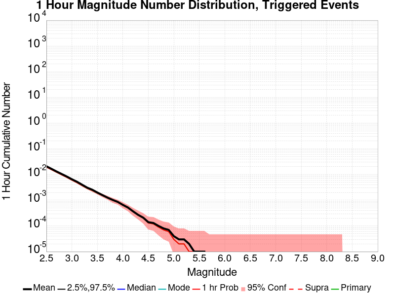
| Mag | Mean | 2.5 %ile | 97.5 %ile | Median | Mode | 1 hr Probability | 1 hr Prob 95% Conf | 1 hr Supra-Seis Prob | Primary Aftershocks Mean |
|---|---|---|---|---|---|---|---|---|---|
| M≥2.5 | 0.020 | 0.000 | 0.000 | 0.000 | 0.000 | 0.019 (1.90%) | [1.78% 2.02%] | 0.000 (0.00%) | 0.019 |
| M≥2.6 | 0.016 | 0.000 | 0.000 | 0.000 | 0.000 | 0.015 (1.49%) | [1.39% 1.60%] | 0.000 (0.00%) | 0.015 |
| M≥2.7 | 0.012 | 0.000 | 0.000 | 0.000 | 0.000 | 0.012 (1.19%) | [1.10% 1.29%] | 0.000 (0.00%) | 0.012 |
| M≥2.8 | 9.92E-3 | 0.000 | 0.000 | 0.000 | 0.000 | 9.53E-3 (0.95%) | [0.87% 1.04%] | 0.000 (0.00%) | 9.53E-3 |
| M≥2.9 | 7.68E-3 | 0.000 | 0.000 | 0.000 | 0.000 | 7.37E-3 (0.74%) | [0.67% 0.82%] | 0.000 (0.00%) | 7.35E-3 |
| M≥3 | 5.89E-3 | 0.000 | 0.000 | 0.000 | 0.000 | 5.68E-3 (0.57%) | [0.51% 0.64%] | 0.000 (0.00%) | 5.66E-3 |
| M≥3.1 | 4.64E-3 | 0.000 | 0.000 | 0.000 | 0.000 | 4.44E-3 (0.44%) | [0.39% 0.51%] | 0.000 (0.00%) | 4.44E-3 |
| M≥3.2 | 3.40E-3 | 0.000 | 0.000 | 0.000 | 0.000 | 3.24E-3 (0.32%) | [0.28% 0.38%] | 0.000 (0.00%) | 3.24E-3 |
| M≥3.3 | 2.67E-3 | 0.000 | 0.000 | 0.000 | 0.000 | 2.59E-3 (0.26%) | [0.22% 0.31%] | 0.000 (0.00%) | 2.59E-3 |
| M≥3.4 | 2.10E-3 | 0.000 | 0.000 | 0.000 | 0.000 | 2.06E-3 (0.21%) | [0.17% 0.25%] | 0.000 (0.00%) | 2.06E-3 |
| M≥3.5 | 1.69E-3 | 0.000 | 0.000 | 0.000 | 0.000 | 1.65E-3 (0.17%) | [0.13% 0.21%] | 0.000 (0.00%) | 1.65E-3 |
| M≥3.6 | 1.32E-3 | 0.000 | 0.000 | 0.000 | 0.000 | 1.28E-3 (0.13%) | [0.10% 0.16%] | 0.000 (0.00%) | 1.28E-3 |
| M≥3.7 | 1.02E-3 | 0.000 | 0.000 | 0.000 | 0.000 | 1.00E-3 (0.10%) | [0.08% 0.13%] | 0.000 (0.00%) | 1.00E-3 |
| M≥3.8 | 8.06E-4 | 0.000 | 0.000 | 0.000 | 0.000 | 7.86E-4 (0.08%) | [0.06% 0.11%] | 0.000 (0.00%) | 7.86E-4 |
| M≥3.9 | 7.27E-4 | 0.000 | 0.000 | 0.000 | 0.000 | 7.07E-4 (0.07%) | [0.05% 0.10%] | 0.000 (0.00%) | 7.07E-4 |
| M≥4 | 6.29E-4 | 0.000 | 0.000 | 0.000 | 0.000 | 6.09E-4 (0.06%) | [0.04% 0.09%] | 0.000 (0.00%) | 6.09E-4 |
| M≥4.1 | 4.91E-4 | 0.000 | 0.000 | 0.000 | 0.000 | 4.72E-4 (0.05%) | [0.03% 0.07%] | 0.000 (0.00%) | 4.72E-4 |
| M≥4.2 | 3.14E-4 | 0.000 | 0.000 | 0.000 | 0.000 | 3.14E-4 (0.03%) | [0.02% 0.05%] | 0.000 (0.00%) | 3.14E-4 |
| M≥4.3 | 2.95E-4 | 0.000 | 0.000 | 0.000 | 0.000 | 2.95E-4 (0.03%) | [0.02% 0.05%] | 0.000 (0.00%) | 2.95E-4 |
| M≥4.4 | 1.77E-4 | 0.000 | 0.000 | 0.000 | 0.000 | 1.77E-4 (0.02%) | [0.01% 0.03%] | 0.000 (0.00%) | 1.77E-4 |
| M≥4.5 | 1.18E-4 | 0.000 | 0.000 | 0.000 | 0.000 | 1.18E-4 (0.01%) | [0.00% 0.03%] | 0.000 (0.00%) | 1.18E-4 |
| M≥4.6 | 1.18E-4 | 0.000 | 0.000 | 0.000 | 0.000 | 1.18E-4 (0.01%) | [0.00% 0.03%] | 0.000 (0.00%) | 1.18E-4 |
| M≥4.7 | 7.86E-5 | 0.000 | 0.000 | 0.000 | 0.000 | 7.86E-5 (0.01%) | [0.00% 0.02%] | 0.000 (0.00%) | 7.86E-5 |
| M≥4.8 | 7.86E-5 | 0.000 | 0.000 | 0.000 | 0.000 | 7.86E-5 (0.01%) | [0.00% 0.02%] | 0.000 (0.00%) | 7.86E-5 |
| M≥4.9 | 5.89E-5 | 0.000 | 0.000 | 0.000 | 0.000 | 5.89E-5 (0.01%) | [0.00% 0.02%] | 0.000 (0.00%) | 5.89E-5 |
| M≥5 | 1.96E-5 | 0.000 | 0.000 | 0.000 | 0.000 | 1.96E-5 (0.00%) | [0.00% 0.01%] | 0.000 (0.00%) | 1.96E-5 |
| M≥5.1 | 1.96E-5 | 0.000 | 0.000 | 0.000 | 0.000 | 1.96E-5 (0.00%) | [0.00% 0.01%] | 0.000 (0.00%) | 1.96E-5 |
| M≥5.2 | 1.96E-5 | 0.000 | 0.000 | 0.000 | 0.000 | 1.96E-5 (0.00%) | [0.00% 0.01%] | 0.000 (0.00%) | 1.96E-5 |
| M≥5.3 | 0.000 | 0.000 | 0.000 | 0.000 | 0.000 | 0.000 (0.00%) | [0.00% 0.01%] | 0.000 (0.00%) | 0.000 |
| M≥5.4 | 0.000 | 0.000 | 0.000 | 0.000 | 0.000 | 0.000 (0.00%) | [0.00% 0.01%] | 0.000 (0.00%) | 0.000 |
| M≥5.5 | 0.000 | 0.000 | 0.000 | 0.000 | 0.000 | 0.000 (0.00%) | [0.00% 0.01%] | 0.000 (0.00%) | 0.000 |
| M≥5.6 | 0.000 | 0.000 | 0.000 | 0.000 | 0.000 | 0.000 (0.00%) | [0.00% 0.01%] | 0.000 (0.00%) | 0.000 |
| M≥5.7 | 0.000 | 0.000 | 0.000 | 0.000 | 0.000 | 0.000 (0.00%) | [0.00% 0.01%] | 0.000 (0.00%) | 0.000 |
| M≥5.8 | 0.000 | 0.000 | 0.000 | 0.000 | 0.000 | 0.000 (0.00%) | [0.00% 0.01%] | 0.000 (0.00%) | 0.000 |
| M≥5.9 | 0.000 | 0.000 | 0.000 | 0.000 | 0.000 | 0.000 (0.00%) | [0.00% 0.01%] | 0.000 (0.00%) | 0.000 |
| M≥6 | 0.000 | 0.000 | 0.000 | 0.000 | 0.000 | 0.000 (0.00%) | [0.00% 0.01%] | 0.000 (0.00%) | 0.000 |
| M≥6.1 | 0.000 | 0.000 | 0.000 | 0.000 | 0.000 | 0.000 (0.00%) | [0.00% 0.01%] | 0.000 (0.00%) | 0.000 |
| M≥6.2 | 0.000 | 0.000 | 0.000 | 0.000 | 0.000 | 0.000 (0.00%) | [0.00% 0.01%] | 0.000 (0.00%) | 0.000 |
| M≥6.3 | 0.000 | 0.000 | 0.000 | 0.000 | 0.000 | 0.000 (0.00%) | [0.00% 0.01%] | 0.000 (0.00%) | 0.000 |
| M≥6.4 | 0.000 | 0.000 | 0.000 | 0.000 | 0.000 | 0.000 (0.00%) | [0.00% 0.01%] | 0.000 (0.00%) | 0.000 |
| M≥6.5 | 0.000 | 0.000 | 0.000 | 0.000 | 0.000 | 0.000 (0.00%) | [0.00% 0.01%] | 0.000 (0.00%) | 0.000 |
| M≥6.6 | 0.000 | 0.000 | 0.000 | 0.000 | 0.000 | 0.000 (0.00%) | [0.00% 0.01%] | 0.000 (0.00%) | 0.000 |
| M≥6.7 | 0.000 | 0.000 | 0.000 | 0.000 | 0.000 | 0.000 (0.00%) | [0.00% 0.01%] | 0.000 (0.00%) | 0.000 |
| M≥6.8 | 0.000 | 0.000 | 0.000 | 0.000 | 0.000 | 0.000 (0.00%) | [0.00% 0.01%] | 0.000 (0.00%) | 0.000 |
| M≥6.9 | 0.000 | 0.000 | 0.000 | 0.000 | 0.000 | 0.000 (0.00%) | [0.00% 0.01%] | 0.000 (0.00%) | 0.000 |
| M≥7 | 0.000 | 0.000 | 0.000 | 0.000 | 0.000 | 0.000 (0.00%) | [0.00% 0.01%] | 0.000 (0.00%) | 0.000 |
| M≥7.1 | 0.000 | 0.000 | 0.000 | 0.000 | 0.000 | 0.000 (0.00%) | [0.00% 0.01%] | 0.000 (0.00%) | 0.000 |
| M≥7.2 | 0.000 | 0.000 | 0.000 | 0.000 | 0.000 | 0.000 (0.00%) | [0.00% 0.01%] | 0.000 (0.00%) | 0.000 |
| M≥7.3 | 0.000 | 0.000 | 0.000 | 0.000 | 0.000 | 0.000 (0.00%) | [0.00% 0.01%] | 0.000 (0.00%) | 0.000 |
| M≥7.4 | 0.000 | 0.000 | 0.000 | 0.000 | 0.000 | 0.000 (0.00%) | [0.00% 0.01%] | 0.000 (0.00%) | 0.000 |
| M≥7.5 | 0.000 | 0.000 | 0.000 | 0.000 | 0.000 | 0.000 (0.00%) | [0.00% 0.01%] | 0.000 (0.00%) | 0.000 |
| M≥7.6 | 0.000 | 0.000 | 0.000 | 0.000 | 0.000 | 0.000 (0.00%) | [0.00% 0.01%] | 0.000 (0.00%) | 0.000 |
| M≥7.7 | 0.000 | 0.000 | 0.000 | 0.000 | 0.000 | 0.000 (0.00%) | [0.00% 0.01%] | 0.000 (0.00%) | 0.000 |
| M≥7.8 | 0.000 | 0.000 | 0.000 | 0.000 | 0.000 | 0.000 (0.00%) | [0.00% 0.01%] | 0.000 (0.00%) | 0.000 |
| M≥7.9 | 0.000 | 0.000 | 0.000 | 0.000 | 0.000 | 0.000 (0.00%) | [0.00% 0.01%] | 0.000 (0.00%) | 0.000 |
| M≥8 | 0.000 | 0.000 | 0.000 | 0.000 | 0.000 | 0.000 (0.00%) | [0.00% 0.01%] | 0.000 (0.00%) | 0.000 |
| M≥8.1 | 0.000 | 0.000 | 0.000 | 0.000 | 0.000 | 0.000 (0.00%) | [0.00% 0.01%] | 0.000 (0.00%) | 0.000 |
| M≥8.2 | 0.000 | 0.000 | 0.000 | 0.000 | 0.000 | 0.000 (0.00%) | [0.00% 0.01%] | 0.000 (0.00%) | 0.000 |
| M≥8.3 | 0.000 | 0.000 | 0.000 | 0.000 | 0.000 | 0.000 (0.00%) | [0.00% 0.01%] | 0.000 (0.00%) | 0.000 |
| M≥8.4 | 0.000 | 0.000 | 0.000 | 0.000 | 0.000 | 0.000 (0.00%) | [0.00% 0.01%] | 0.000 (0.00%) | 0.000 |
| M≥8.5 | 0.000 | 0.000 | 0.000 | 0.000 | 0.000 | 0.000 (0.00%) | [0.00% 0.01%] | 0.000 (0.00%) | 0.000 |
| M≥8.6 | 0.000 | 0.000 | 0.000 | 0.000 | 0.000 | 0.000 (0.00%) | [0.00% 0.01%] | 0.000 (0.00%) | 0.000 |
| M≥8.7 | 0.000 | 0.000 | 0.000 | 0.000 | 0.000 | 0.000 (0.00%) | [0.00% 0.01%] | 0.000 (0.00%) | 0.000 |
| M≥8.8 | 0.000 | 0.000 | 0.000 | 0.000 | 0.000 | 0.000 (0.00%) | [0.00% 0.01%] | 0.000 (0.00%) | 0.000 |
| M≥8.9 | 0.000 | 0.000 | 0.000 | 0.000 | 0.000 | 0.000 (0.00%) | [0.00% 0.01%] | 0.000 (0.00%) | 0.000 |
| M≥9 | 0.000 | 0.000 | 0.000 | 0.000 | 0.000 | 0.000 (0.00%) | [0.00% 0.01%] | 0.000 (0.00%) | 0.000 |
These plots show how the probability of ruptures of various magnitudes within the region used to fetch ComCat trigger ruptures changes over time

| Forecast Duration | UCERF3-ETAS [95% Conf] | UCERF3-ETAS Triggered Only | UCERF3-TD | UCERF3-ETAS/TD Gain | UCERF3-TI |
|---|---|---|---|---|---|
| 1 Hour | 2.25E-5 [3.89E-6 - 1.30E-4] | 1.96E-5 | 2.87E-6 | 7.85 | 2.80E-6 |
| 1 Day | 7.56E-4 [5.55E-4 - 1.04E-3] | 6.88E-4 | 6.88E-5 | 10.99 | 6.72E-5 |
| 1 Week | 2.64E-3 [2.27E-3 - 3.09E-3] | 2.16E-3 | 4.82E-4 | 5.48 | 4.70E-4 |
| 1 Month | 5.34E-3 [4.87E-3 - 5.88E-3] | 3.28E-3 | 2.06E-3 | 2.59 | 2.01E-3 |
| 1 Year | 0.030 [0.029 - 0.030] | 5.15E-3 | 0.025 | 1.2 | 0.024 |
| 10 Years | 0.227 [0.227 - 0.228] | 6.64E-3 | 0.222 | 1.02 | 0.218 |
| 30 Years | 0.533 [0.533 - 0.533] * | * | 0.530 | 1.01 * | 0.521 |
| 100 Years | 0.920 [0.920 - 0.920] * | * | 0.920 | 1 * | 0.914 |
* forecast duration is longer than simulation length, only ETAS ruptures from the first 10 years are included

| Forecast Duration | UCERF3-ETAS [95% Conf] | UCERF3-ETAS Triggered Only | UCERF3-TD | UCERF3-ETAS/TD Gain | UCERF3-TI |
|---|---|---|---|---|---|
| 1 Hour | 6.64E-7 [6.64E-7 - 9.48E-5] | 0.000 | 6.64E-7 | 1 | 5.97E-7 |
| 1 Day | 7.49E-5 [3.12E-5 - 2.04E-4] | 5.89E-5 | 1.59E-5 | 4.7 | 1.43E-5 |
| 1 Week | 4.46E-4 [3.13E-4 - 6.58E-4] | 3.34E-4 | 1.12E-4 | 3.99 | 1.00E-4 |
| 1 Month | 9.30E-4 [7.71E-4 - 1.17E-3] | 4.52E-4 | 4.78E-4 | 1.94 | 4.30E-4 |
| 1 Year | 6.45E-3 [6.26E-3 - 6.72E-3] | 6.48E-4 | 5.81E-3 | 1.11 | 5.22E-3 |
| 10 Years | 0.057 [0.057 - 0.058] | 8.45E-4 | 0.057 | 1.01 | 0.051 |
| 30 Years | 0.161 [0.161 - 0.162] * | * | 0.161 | 1 * | 0.145 |
| 100 Years | 0.446 [0.446 - 0.446] * | * | 0.446 | 1 * | 0.407 |
* forecast duration is longer than simulation length, only ETAS ruptures from the first 10 years are included

| Forecast Duration | UCERF3-ETAS [95% Conf] | UCERF3-ETAS Triggered Only | UCERF3-TD | UCERF3-ETAS/TD Gain | UCERF3-TI |
|---|---|---|---|---|---|
| 1 Hour | 2.55E-7 [2.55E-7 - 9.43E-5] | 0.000 | 2.55E-7 | 1 | 2.24E-7 |
| 1 Day | 6.12E-6 [6.12E-6 - 1.00E-4] | 0.000 | 6.12E-6 | 1 | 5.39E-6 |
| 1 Week | 1.21E-4 [6.80E-5 - 2.59E-4] | 7.86E-5 | 4.29E-5 | 2.83 | 3.77E-5 |
| 1 Month | 3.21E-4 [2.44E-4 - 4.81E-4] | 1.38E-4 | 1.84E-4 | 1.75 | 1.62E-4 |
| 1 Year | 2.39E-3 [2.31E-3 - 2.56E-3] | 1.57E-4 | 2.23E-3 | 1.07 | 1.96E-3 |
| 10 Years | 0.022 [0.022 - 0.023] | 2.16E-4 | 0.022 | 1.01 | 0.019 |
| 30 Years | 0.065 [0.065 - 0.066] * | * | 0.065 | 1 * | 0.057 |
| 100 Years | 0.204 [0.204 - 0.204] * | * | 0.204 | 1 * | 0.179 |
* forecast duration is longer than simulation length, only ETAS ruptures from the first 10 years are included
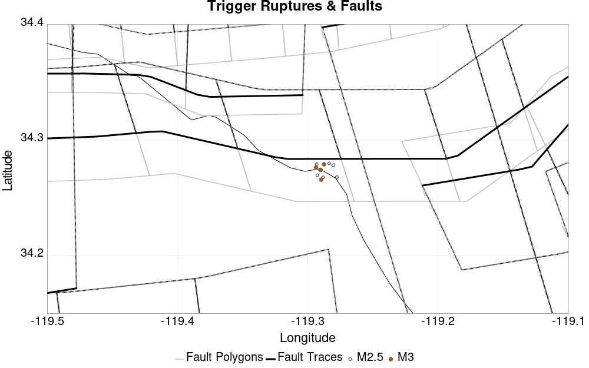
| Section Name | Strike, Dip, Rake | # Hypos In Poly | Max Mag w/ Hypo In Poly | # Surfs In Poly | Max Mag w/ Surf In Poly | Min Dist To Any (km) | Min Poly Dist To Any (km) | Min Dist To Largest (km) | Min Poly Dist To Largest (km) |
|---|---|---|---|---|---|---|---|---|---|
| Ventura-Pitas Point | 257, 64, 60 | 11 | 3.61 | 11 | 3.61 | 4.749 | 0.000 | 5.005 | 0.000 |
| Sisar | 78, 29, 90 | 0 | 0 | 3.184 | 2.078 | 4.683 | 2.706 | ||
| Channel Islands Thrust | 257, 20, 90 | 0 | 0 | 6.768 | 6.711 | 8.217 | 8.179 | ||
| Oak Ridge (Onshore) | 69, 65, 90 | 0 | 0 | 8.517 | 5.304 | 10.133 | 5.903 | ||
| Red Mountain | 274, 56, 90 | 0 | 0 | 11.682 | 4.957 | 12.032 | 5.092 | ||
| Mission Ridge-Arroyo Parida-Santa Ana | 87, 70, 90 | 0 | 0 | 14.228 | 10.591 | 14.428 | 10.659 | ||
| Simi-Santa Rosa | 256, 60, 30 | 0 | 0 | 14.804 | 14.732 | 15.651 | 15.639 | ||
| Pitas Point (Lower)-Montalvo | 269, 16, 90 | 0 | 0 | 18.433 | 17.022 | 19.116 | 17.591 |
These are map plots of individual catalogs from the simulations, selected as the closest catalog to each of the given percentiles in terms of total number of events.
| Duration | p0.0 %-ile | p25.0 %-ile | p50.0 %-ile | p75.0 %-ile | p90.0 %-ile | p95.0 %-ile | p97.5 %-ile | p98.0 %-ile | p99.0 %-ile | p99.5 %-ile | p99.9 %-ile | p99.998035 %-ile |
|---|---|---|---|---|---|---|---|---|---|---|---|---|
| 1 Week |  |  |  |  |  |  |  |  |  |  |  | |
| 1 Month |  |  |  |  |  | 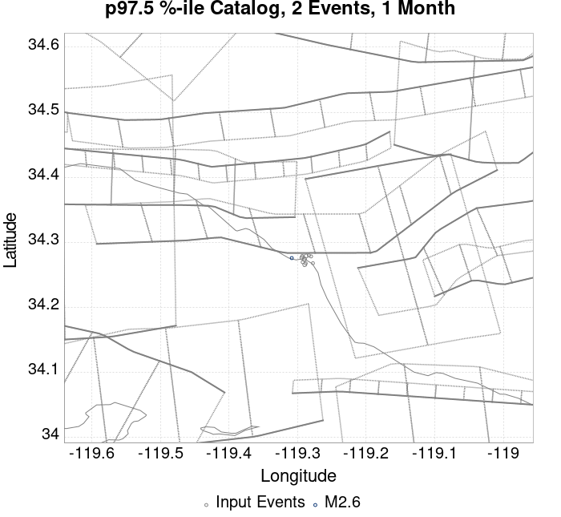 |  |  |  |  | ||
| 1 Year |  |  | 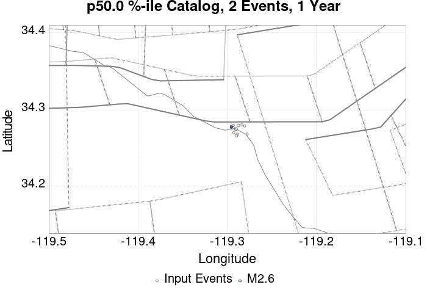 |  |  |  |  |  |  |  | 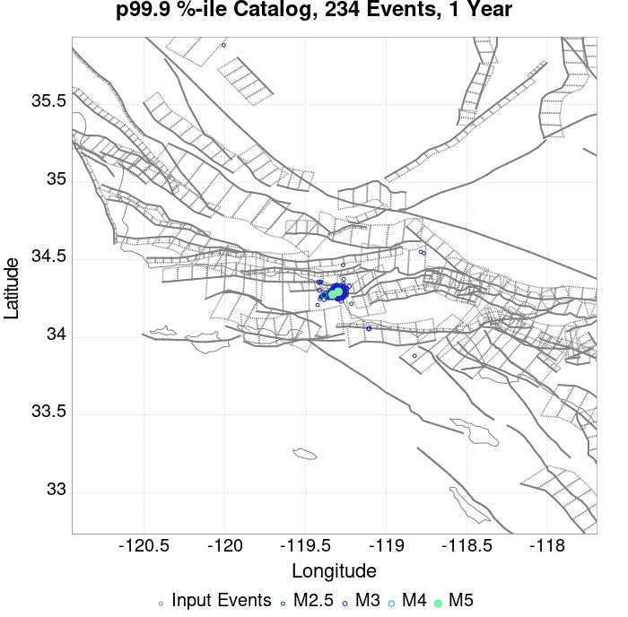 |  |
| 10 Year |  |  |  | 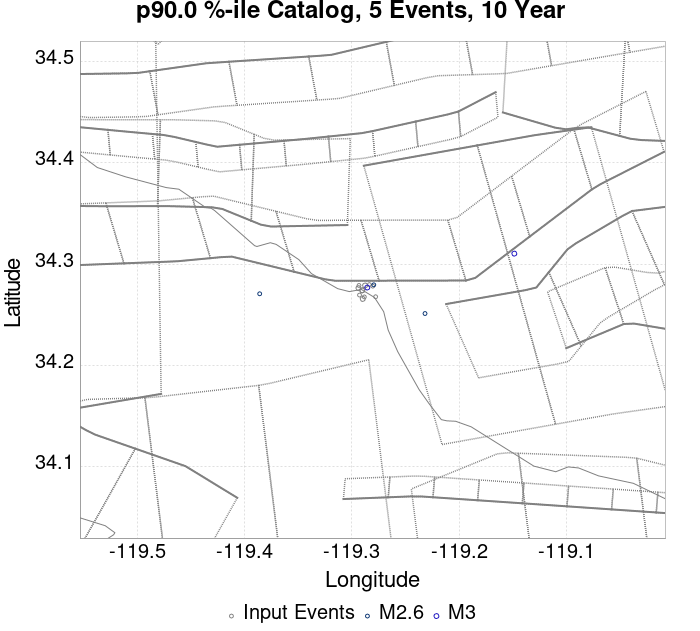 |  |  |  |  |  |
These plots compare simulated sequences with data from ComCat. All plots only consider events with hypocenters inside the ComCat region defined in the JSON input file.
Last updated at 2019/11/09 04:33:24 UTC, 3.7 hours after the simulation start time.
Total matching ComCat events found: 0
| Incremental MND | Cumulative MND |
|---|---|
 |  |
The following plots compare simulation results with ComCat data above a magnitude threshold. Plots labeled as M≥Mc(t) use the time-dependent magnitude of completeness (Mc) defined in Helmstetter et al. (2006), which is plotted below. In the case of multiple M≥5 ruptures, either as input to the simulation or in the comparison data, the maximum calculated time-dependent Mc is used. This time-dependent Mc function is plotted below.

| M≥Mc(t) | M≥3 | M≥3.5 | M≥4 |
|---|---|---|---|
 |  |  |  |

Note: maps labeled 'Forecast' are for a duration that extends into the future, only forecasted values are plotted (ComCat data omitted)
| Current (3.7 Hour) | Forecast: 1 Day | Forecast: 1 Week | Forecast: 1 Month | Forecast: 1 Year | |
|---|---|---|---|---|---|
| M≥Mc(t) |  |  |  |  |  |
| Prob: 5.62%, Actual: 0 | Prob: 19.95% | Prob: 40.66% | Prob: 53.54% | Prob: 68.24% | |
| M≥3 |  |  |  |  |  |
| Prob: 1.82%, Actual: 0 | Prob: 6.91% | Prob: 15.77% | Prob: 22.29% | Prob: 31.45% | |
| M≥3.5 |  | 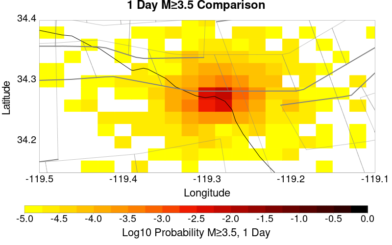 | 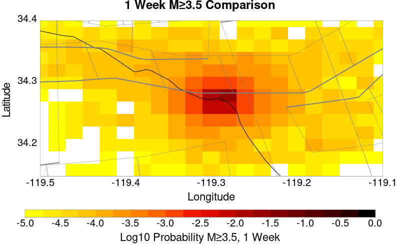 |  |  |
| Prob: 0.57%, Actual: 0 | Prob: 2.25% | Prob: 5.53% | Prob: 8.06% | Prob: 11.88% | |
| M≥4 |  |  |  |  | 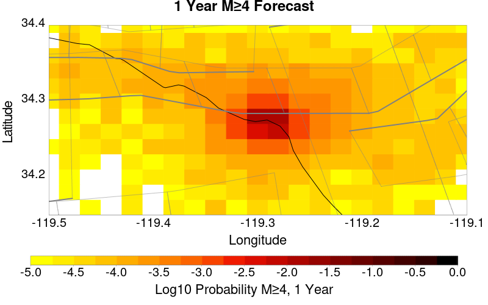 |
| Prob: 0.21%, Actual: 0 | Prob: 0.77% | Prob: 1.83% | Prob: 2.72% | Prob: 4.18% | |
| M≥4.5 |  |  |  |  |  |
| Prob: 0.06%, Actual: 0 | Prob: 0.23% | Prob: 0.58% | Prob: 0.86% | Prob: 1.38% |
Note: maps labeled 'Forecast' are for a duration that extends into the future, only forecasted values are plotted (ComCat data omitted)
| Current (3.7 Hour) | Forecast: 1 Day | Forecast: 1 Week | Forecast: 1 Month | Forecast: 1 Year | |
|---|---|---|---|---|---|
| M≥Mc(t) |  |  | 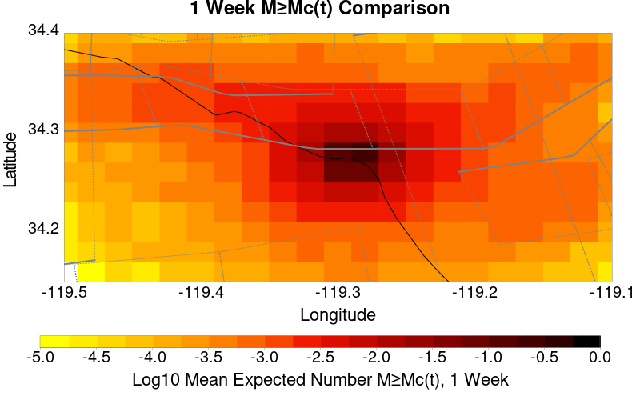 |  |  |
| Mean: 0.070, Actual: 0 | Mean: 0.278 | Mean: 0.845 | Mean: 1.378 | Mean: 2.306 | |
| M≥3 |  | 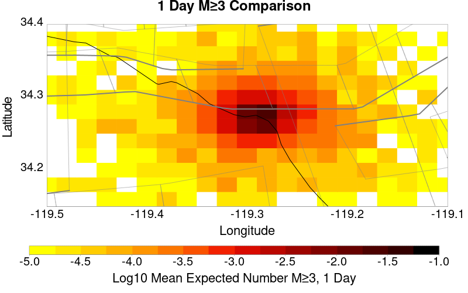 |  |  | 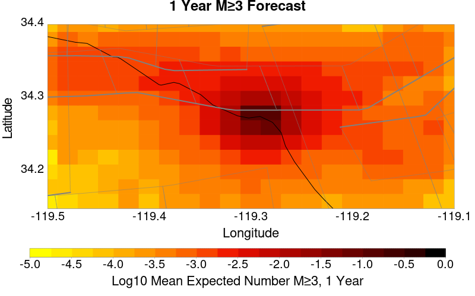 |
| Mean: 0.022, Actual: 0 | Mean: 0.088 | Mean: 0.267 | Mean: 0.433 | Mean: 0.726 | |
| M≥3.5 | 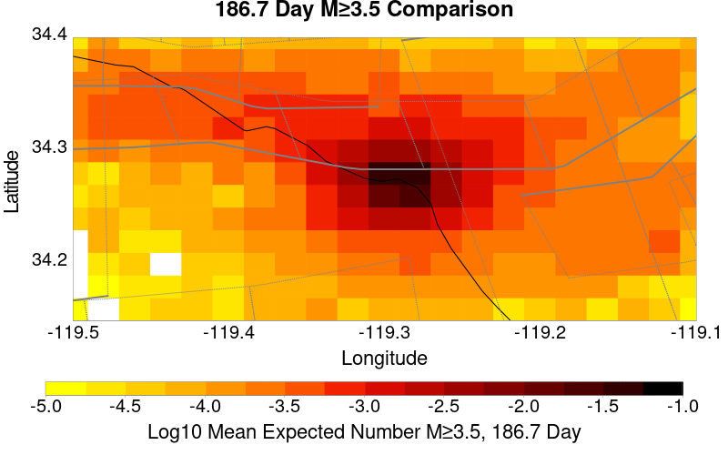 |  |  |  |  |
| Mean: 6.74E-3, Actual: 0 | Mean: 0.027 | Mean: 0.085 | Mean: 0.139 | Mean: 0.230 | |
| M≥4 |  |  |  |  |  |
| Mean: 2.40E-3, Actual: 0 | Mean: 8.62E-3 | Mean: 0.026 | Mean: 0.043 | Mean: 0.072 | |
| M≥4.5 |  |  |  | 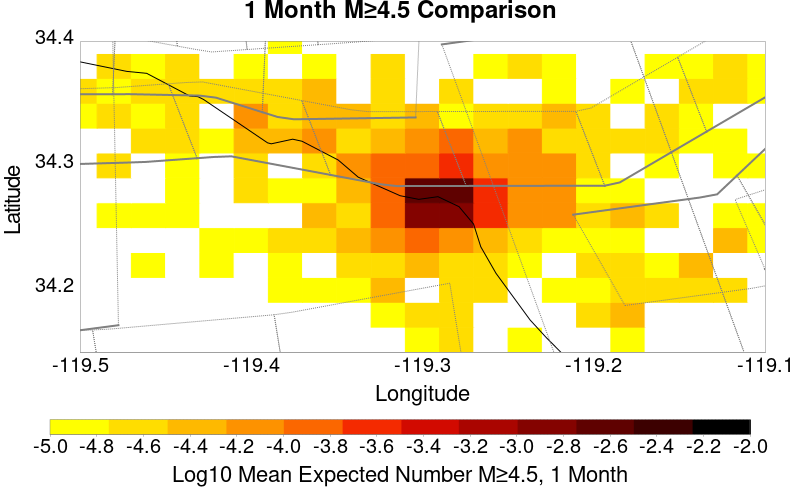 |  |
| Mean: 7.07E-4, Actual: 0 | Mean: 2.55E-3 | Mean: 7.96E-3 | Mean: 0.013 | Mean: 0.022 |
| M≥Mc(t) | M≥3 | M≥3.5 | M≥4 | M≥4.5 |
|---|---|---|---|---|
 |  |  | 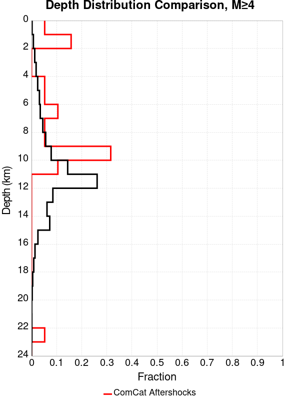 |  |
| Min Mag | 1 yr Triggered Ruptures (no spontaneous) | 10 yr Triggered Ruptures (no spontaneous) | 10 yr Triggered Ruptures (primary aftershocks only) |
|---|---|---|---|
| All Supra. Seis. |  |  |  |
| M≥6.5 | 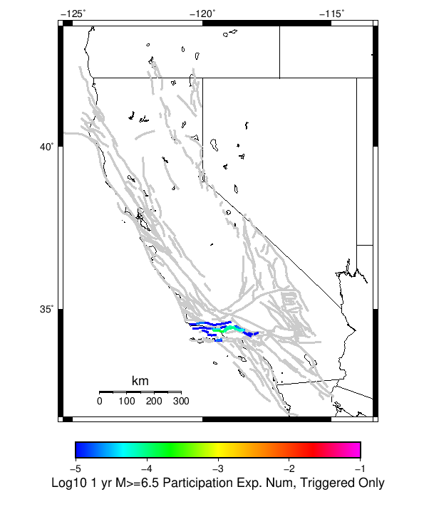 |  |  |
| M≥7 |  |  |  |
| M≥7.5 |  |  |  |
First 10 of 28 with matching ruptures shown
| Parent Name | Triggered 10 Year Mean Count | Triggered 1 Day Prob | Triggered 1 Day 95% Conf | Triggered 1 Week Prob | Triggered 1 Week 95% Conf | Triggered 1 Month Prob | Triggered 1 Month 95% Conf | Triggered 1 Year Prob | Triggered 1 Year 95% Conf | Triggered 10 Year Prob | Triggered 10 Year 95% Conf | Triggered 10 Year Primary Mean Count |
|---|---|---|---|---|---|---|---|---|---|---|---|---|
| Ventura-Pitas Point | 3.9292732E-4 | 0.000 (0.00%) | [0.00% 0.01%] | 1.38E-4 (0.01%) | [0.01% 0.03%] | 2.16E-4 (0.02%) | [0.01% 0.04%] | 2.55E-4 (0.03%) | [0.01% 0.04%] | 3.54E-4 (0.04%) | [0.02% 0.06%] | 1.768173E-4 |
| Oak Ridge (Onshore) | 1.9646366E-4 | 0.000 (0.00%) | [0.00% 0.01%] | 7.86E-5 (0.01%) | [0.00% 0.02%] | 1.38E-4 (0.01%) | [0.01% 0.03%] | 1.57E-4 (0.02%) | [0.01% 0.03%] | 1.96E-4 (0.02%) | [0.01% 0.04%] | 1.1787819E-4 |
| Santa Susana alt 1 | 1.5717093E-4 | 0.000 (0.00%) | [0.00% 0.01%] | 5.89E-5 (0.01%) | [0.00% 0.02%] | 9.82E-5 (0.01%) | [0.00% 0.02%] | 1.18E-4 (0.01%) | [0.00% 0.03%] | 1.57E-4 (0.02%) | [0.01% 0.03%] | 9.823183E-5 |
| Red Mountain | 1.1787819E-4 | 0.000 (0.00%) | [0.00% 0.01%] | 0.000 (0.00%) | [0.00% 0.01%] | 1.96E-5 (0.00%) | [0.00% 0.01%] | 3.93E-5 (0.00%) | [0.00% 0.02%] | 9.82E-5 (0.01%) | [0.00% 0.02%] | 0.0 |
| Mission Ridge-Arroyo Parida-Santa Ana | 9.823183E-5 | 0.000 (0.00%) | [0.00% 0.01%] | 0.000 (0.00%) | [0.00% 0.01%] | 3.93E-5 (0.00%) | [0.00% 0.02%] | 3.93E-5 (0.00%) | [0.00% 0.02%] | 7.86E-5 (0.01%) | [0.00% 0.02%] | 0.0 |
| Santa Susana East (connector) | 9.823183E-5 | 0.000 (0.00%) | [0.00% 0.01%] | 1.96E-5 (0.00%) | [0.00% 0.01%] | 5.89E-5 (0.01%) | [0.00% 0.02%] | 7.86E-5 (0.01%) | [0.00% 0.02%] | 9.82E-5 (0.01%) | [0.00% 0.02%] | 3.9292732E-5 |
| San Cayetano | 7.8585465E-5 | 0.000 (0.00%) | [0.00% 0.01%] | 1.96E-5 (0.00%) | [0.00% 0.01%] | 3.93E-5 (0.00%) | [0.00% 0.02%] | 5.89E-5 (0.01%) | [0.00% 0.02%] | 7.86E-5 (0.01%) | [0.00% 0.02%] | 3.9292732E-5 |
| Channel Islands Thrust | 3.9292732E-5 | 0.000 (0.00%) | [0.00% 0.01%] | 0.000 (0.00%) | [0.00% 0.01%] | 0.000 (0.00%) | [0.00% 0.01%] | 1.96E-5 (0.00%) | [0.00% 0.01%] | 3.93E-5 (0.00%) | [0.00% 0.02%] | 0.0 |
| Northridge | 3.9292732E-5 | 0.000 (0.00%) | [0.00% 0.01%] | 1.96E-5 (0.00%) | [0.00% 0.01%] | 3.93E-5 (0.00%) | [0.00% 0.02%] | 3.93E-5 (0.00%) | [0.00% 0.02%] | 3.93E-5 (0.00%) | [0.00% 0.02%] | 3.9292732E-5 |
| Santa Ynez (East) | 3.9292732E-5 | 0.000 (0.00%) | [0.00% 0.01%] | 0.000 (0.00%) | [0.00% 0.01%] | 0.000 (0.00%) | [0.00% 0.01%] | 1.96E-5 (0.00%) | [0.00% 0.01%] | 3.93E-5 (0.00%) | [0.00% 0.02%] | 0.0 |
First 10 of 19 with matching ruptures shown
| Parent Name | Triggered 10 Year Mean Count | Triggered 1 Day Prob | Triggered 1 Day 95% Conf | Triggered 1 Week Prob | Triggered 1 Week 95% Conf | Triggered 1 Month Prob | Triggered 1 Month 95% Conf | Triggered 1 Year Prob | Triggered 1 Year 95% Conf | Triggered 10 Year Prob | Triggered 10 Year 95% Conf | Triggered 10 Year Primary Mean Count |
|---|---|---|---|---|---|---|---|---|---|---|---|---|
| Ventura-Pitas Point | 3.3398822E-4 | 0.000 (0.00%) | [0.00% 0.01%] | 1.18E-4 (0.01%) | [0.00% 0.03%] | 1.77E-4 (0.02%) | [0.01% 0.03%] | 2.16E-4 (0.02%) | [0.01% 0.04%] | 3.14E-4 (0.03%) | [0.02% 0.05%] | 1.5717093E-4 |
| Oak Ridge (Onshore) | 1.9646366E-4 | 0.000 (0.00%) | [0.00% 0.01%] | 7.86E-5 (0.01%) | [0.00% 0.02%] | 1.38E-4 (0.01%) | [0.01% 0.03%] | 1.57E-4 (0.02%) | [0.01% 0.03%] | 1.96E-4 (0.02%) | [0.01% 0.04%] | 1.1787819E-4 |
| Santa Susana alt 1 | 1.5717093E-4 | 0.000 (0.00%) | [0.00% 0.01%] | 5.89E-5 (0.01%) | [0.00% 0.02%] | 9.82E-5 (0.01%) | [0.00% 0.02%] | 1.18E-4 (0.01%) | [0.00% 0.03%] | 1.57E-4 (0.02%) | [0.01% 0.03%] | 9.823183E-5 |
| Santa Susana East (connector) | 9.823183E-5 | 0.000 (0.00%) | [0.00% 0.01%] | 1.96E-5 (0.00%) | [0.00% 0.01%] | 5.89E-5 (0.01%) | [0.00% 0.02%] | 7.86E-5 (0.01%) | [0.00% 0.02%] | 9.82E-5 (0.01%) | [0.00% 0.02%] | 3.9292732E-5 |
| Red Mountain | 7.8585465E-5 | 0.000 (0.00%) | [0.00% 0.01%] | 0.000 (0.00%) | [0.00% 0.01%] | 1.96E-5 (0.00%) | [0.00% 0.01%] | 3.93E-5 (0.00%) | [0.00% 0.02%] | 7.86E-5 (0.01%) | [0.00% 0.02%] | 0.0 |
| San Cayetano | 7.8585465E-5 | 0.000 (0.00%) | [0.00% 0.01%] | 1.96E-5 (0.00%) | [0.00% 0.01%] | 3.93E-5 (0.00%) | [0.00% 0.02%] | 5.89E-5 (0.01%) | [0.00% 0.02%] | 7.86E-5 (0.01%) | [0.00% 0.02%] | 3.9292732E-5 |
| Channel Islands Thrust | 3.9292732E-5 | 0.000 (0.00%) | [0.00% 0.01%] | 0.000 (0.00%) | [0.00% 0.01%] | 0.000 (0.00%) | [0.00% 0.01%] | 1.96E-5 (0.00%) | [0.00% 0.01%] | 3.93E-5 (0.00%) | [0.00% 0.02%] | 0.0 |
| Northridge | 3.9292732E-5 | 0.000 (0.00%) | [0.00% 0.01%] | 1.96E-5 (0.00%) | [0.00% 0.01%] | 3.93E-5 (0.00%) | [0.00% 0.02%] | 3.93E-5 (0.00%) | [0.00% 0.02%] | 3.93E-5 (0.00%) | [0.00% 0.02%] | 3.9292732E-5 |
| Sisar | 3.9292732E-5 | 0.000 (0.00%) | [0.00% 0.01%] | 0.000 (0.00%) | [0.00% 0.01%] | 1.96E-5 (0.00%) | [0.00% 0.01%] | 1.96E-5 (0.00%) | [0.00% 0.01%] | 3.93E-5 (0.00%) | [0.00% 0.02%] | 3.9292732E-5 |
| Clamshell-Sawpit | 1.9646366E-5 | 0.000 (0.00%) | [0.00% 0.01%] | 0.000 (0.00%) | [0.00% 0.01%] | 0.000 (0.00%) | [0.00% 0.01%] | 1.96E-5 (0.00%) | [0.00% 0.01%] | 1.96E-5 (0.00%) | [0.00% 0.01%] | 0.0 |
First 10 of 16 with matching ruptures shown
| Parent Name | Triggered 10 Year Mean Count | Triggered 1 Day Prob | Triggered 1 Day 95% Conf | Triggered 1 Week Prob | Triggered 1 Week 95% Conf | Triggered 1 Month Prob | Triggered 1 Month 95% Conf | Triggered 1 Year Prob | Triggered 1 Year 95% Conf | Triggered 10 Year Prob | Triggered 10 Year 95% Conf | Triggered 10 Year Primary Mean Count |
|---|---|---|---|---|---|---|---|---|---|---|---|---|
| Ventura-Pitas Point | 2.1611001E-4 | 0.000 (0.00%) | [0.00% 0.01%] | 7.86E-5 (0.01%) | [0.00% 0.02%] | 1.38E-4 (0.01%) | [0.01% 0.03%] | 1.57E-4 (0.02%) | [0.01% 0.03%] | 2.16E-4 (0.02%) | [0.01% 0.04%] | 1.1787819E-4 |
| Oak Ridge (Onshore) | 1.9646366E-4 | 0.000 (0.00%) | [0.00% 0.01%] | 7.86E-5 (0.01%) | [0.00% 0.02%] | 1.38E-4 (0.01%) | [0.01% 0.03%] | 1.57E-4 (0.02%) | [0.01% 0.03%] | 1.96E-4 (0.02%) | [0.01% 0.04%] | 1.1787819E-4 |
| Santa Susana alt 1 | 1.5717093E-4 | 0.000 (0.00%) | [0.00% 0.01%] | 5.89E-5 (0.01%) | [0.00% 0.02%] | 9.82E-5 (0.01%) | [0.00% 0.02%] | 1.18E-4 (0.01%) | [0.00% 0.03%] | 1.57E-4 (0.02%) | [0.01% 0.03%] | 9.823183E-5 |
| Santa Susana East (connector) | 9.823183E-5 | 0.000 (0.00%) | [0.00% 0.01%] | 1.96E-5 (0.00%) | [0.00% 0.01%] | 5.89E-5 (0.01%) | [0.00% 0.02%] | 7.86E-5 (0.01%) | [0.00% 0.02%] | 9.82E-5 (0.01%) | [0.00% 0.02%] | 3.9292732E-5 |
| San Cayetano | 7.8585465E-5 | 0.000 (0.00%) | [0.00% 0.01%] | 1.96E-5 (0.00%) | [0.00% 0.01%] | 3.93E-5 (0.00%) | [0.00% 0.02%] | 5.89E-5 (0.01%) | [0.00% 0.02%] | 7.86E-5 (0.01%) | [0.00% 0.02%] | 3.9292732E-5 |
| Northridge | 3.9292732E-5 | 0.000 (0.00%) | [0.00% 0.01%] | 1.96E-5 (0.00%) | [0.00% 0.01%] | 3.93E-5 (0.00%) | [0.00% 0.02%] | 3.93E-5 (0.00%) | [0.00% 0.02%] | 3.93E-5 (0.00%) | [0.00% 0.02%] | 3.9292732E-5 |
| Red Mountain | 3.9292732E-5 | 0.000 (0.00%) | [0.00% 0.01%] | 0.000 (0.00%) | [0.00% 0.01%] | 1.96E-5 (0.00%) | [0.00% 0.01%] | 1.96E-5 (0.00%) | [0.00% 0.01%] | 3.93E-5 (0.00%) | [0.00% 0.02%] | 0.0 |
| Sisar | 3.9292732E-5 | 0.000 (0.00%) | [0.00% 0.01%] | 0.000 (0.00%) | [0.00% 0.01%] | 1.96E-5 (0.00%) | [0.00% 0.01%] | 1.96E-5 (0.00%) | [0.00% 0.01%] | 3.93E-5 (0.00%) | [0.00% 0.02%] | 3.9292732E-5 |
| Channel Islands Thrust | 1.9646366E-5 | 0.000 (0.00%) | [0.00% 0.01%] | 0.000 (0.00%) | [0.00% 0.01%] | 0.000 (0.00%) | [0.00% 0.01%] | 0.000 (0.00%) | [0.00% 0.01%] | 1.96E-5 (0.00%) | [0.00% 0.01%] | 0.0 |
| Malibu Coast (Extension) alt 1 | 1.9646366E-5 | 0.000 (0.00%) | [0.00% 0.01%] | 0.000 (0.00%) | [0.00% 0.01%] | 0.000 (0.00%) | [0.00% 0.01%] | 0.000 (0.00%) | [0.00% 0.01%] | 1.96E-5 (0.00%) | [0.00% 0.01%] | 0.0 |
First 10 of 11 with matching ruptures shown
| Parent Name | Triggered 10 Year Mean Count | Triggered 1 Day Prob | Triggered 1 Day 95% Conf | Triggered 1 Week Prob | Triggered 1 Week 95% Conf | Triggered 1 Month Prob | Triggered 1 Month 95% Conf | Triggered 1 Year Prob | Triggered 1 Year 95% Conf | Triggered 10 Year Prob | Triggered 10 Year 95% Conf | Triggered 10 Year Primary Mean Count |
|---|---|---|---|---|---|---|---|---|---|---|---|---|
| Oak Ridge (Onshore) | 1.768173E-4 | 0.000 (0.00%) | [0.00% 0.01%] | 5.89E-5 (0.01%) | [0.00% 0.02%] | 1.18E-4 (0.01%) | [0.00% 0.03%] | 1.38E-4 (0.01%) | [0.01% 0.03%] | 1.77E-4 (0.02%) | [0.01% 0.03%] | 1.1787819E-4 |
| Ventura-Pitas Point | 1.768173E-4 | 0.000 (0.00%) | [0.00% 0.01%] | 5.89E-5 (0.01%) | [0.00% 0.02%] | 1.18E-4 (0.01%) | [0.00% 0.03%] | 1.38E-4 (0.01%) | [0.01% 0.03%] | 1.77E-4 (0.02%) | [0.01% 0.03%] | 1.1787819E-4 |
| Santa Susana alt 1 | 1.5717093E-4 | 0.000 (0.00%) | [0.00% 0.01%] | 5.89E-5 (0.01%) | [0.00% 0.02%] | 9.82E-5 (0.01%) | [0.00% 0.02%] | 1.18E-4 (0.01%) | [0.00% 0.03%] | 1.57E-4 (0.02%) | [0.01% 0.03%] | 9.823183E-5 |
| Santa Susana East (connector) | 9.823183E-5 | 0.000 (0.00%) | [0.00% 0.01%] | 1.96E-5 (0.00%) | [0.00% 0.01%] | 5.89E-5 (0.01%) | [0.00% 0.02%] | 7.86E-5 (0.01%) | [0.00% 0.02%] | 9.82E-5 (0.01%) | [0.00% 0.02%] | 3.9292732E-5 |
| San Cayetano | 7.8585465E-5 | 0.000 (0.00%) | [0.00% 0.01%] | 1.96E-5 (0.00%) | [0.00% 0.01%] | 3.93E-5 (0.00%) | [0.00% 0.02%] | 5.89E-5 (0.01%) | [0.00% 0.02%] | 7.86E-5 (0.01%) | [0.00% 0.02%] | 3.9292732E-5 |
| Northridge | 3.9292732E-5 | 0.000 (0.00%) | [0.00% 0.01%] | 1.96E-5 (0.00%) | [0.00% 0.01%] | 3.93E-5 (0.00%) | [0.00% 0.02%] | 3.93E-5 (0.00%) | [0.00% 0.02%] | 3.93E-5 (0.00%) | [0.00% 0.02%] | 3.9292732E-5 |
| Sisar | 3.9292732E-5 | 0.000 (0.00%) | [0.00% 0.01%] | 0.000 (0.00%) | [0.00% 0.01%] | 1.96E-5 (0.00%) | [0.00% 0.01%] | 1.96E-5 (0.00%) | [0.00% 0.01%] | 3.93E-5 (0.00%) | [0.00% 0.02%] | 3.9292732E-5 |
| Pitas Point (Lower West) | 1.9646366E-5 | 0.000 (0.00%) | [0.00% 0.01%] | 0.000 (0.00%) | [0.00% 0.01%] | 1.96E-5 (0.00%) | [0.00% 0.01%] | 1.96E-5 (0.00%) | [0.00% 0.01%] | 1.96E-5 (0.00%) | [0.00% 0.01%] | 1.9646366E-5 |
| Pitas Point (Lower)-Montalvo | 1.9646366E-5 | 0.000 (0.00%) | [0.00% 0.01%] | 0.000 (0.00%) | [0.00% 0.01%] | 1.96E-5 (0.00%) | [0.00% 0.01%] | 1.96E-5 (0.00%) | [0.00% 0.01%] | 1.96E-5 (0.00%) | [0.00% 0.01%] | 1.9646366E-5 |
| Santa Ynez (West) | 1.9646366E-5 | 0.000 (0.00%) | [0.00% 0.01%] | 0.000 (0.00%) | [0.00% 0.01%] | 1.96E-5 (0.00%) | [0.00% 0.01%] | 1.96E-5 (0.00%) | [0.00% 0.01%] | 1.96E-5 (0.00%) | [0.00% 0.01%] | 1.9646366E-5 |
The first 5 sections (sorted by trigger rate) are plotted below. All fault MPDs are available here
| 1 Week | 1 Month | 1 Year | 10 Year |
|---|---|---|---|
 |  |  |  |
 |  |  |  |
 |  |  |  |
 |  |  |  |
 |  |  | 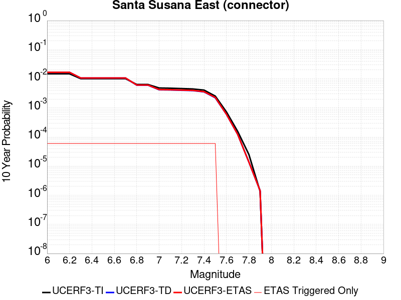 |
| Min Mag | Triggered Ruptures (no spontaneous) | Triggered Ruptures (primary aftershocks only) |
|---|---|---|
| M≥2.5 |  |  |
| M≥5 |  |  |
| M≥6 |  |  |
| M≥7 |  |  |
{
"numSimulations": 100000,
"duration": 10.0,
"startTimeMillis": 1573260807250,
"includeSpontaneous": false,
"randomSeed": 1573260806419,
"binaryOutput": true,
"binaryOutputFilters": [
{
"prefix": "results_complete",
"descendantsOnly": false
},
{
"prefix": "results_m5_preserve_chain",
"minMag": 5.0,
"preserveChainBelowMag": true,
"descendantsOnly": false
}
],
"forceRecalc": false,
"simulationName": "ComCat data 1.5 d after ci38229234, Custom Region, Point Sources",
"numRetries": 3,
"outputDir": "${ETAS_SIM_DIR}/2019_11_08-ComCatdata1p5dafterci38229234_CustomRegion_PointSources",
"treatTriggerCatalogAsSpontaneous": false,
"triggerRuptures": [
{
"occurrenceTimeMillis": 1573131521630,
"comcatEventID": "ci38229234",
"mag": 3.2,
"latitude": 34.274,
"longitude": -119.29016670000001,
"depth": 11.41
},
{
"occurrenceTimeMillis": 1573131939400,
"comcatEventID": "ci38229250",
"mag": 3.42,
"latitude": 34.2761667,
"longitude": -119.29366670000002,
"depth": 14.56
},
{
"occurrenceTimeMillis": 1573215012790,
"comcatEventID": "ci38231562",
"mag": 3.37,
"latitude": 34.2655,
"longitude": -119.2896667,
"depth": 11.42
},
{
"occurrenceTimeMillis": 1573219757800,
"comcatEventID": "ci38231770",
"mag": 2.9,
"latitude": 34.2693333,
"longitude": -119.2926667,
"depth": 13.49
},
{
"occurrenceTimeMillis": 1573219757830,
"comcatEventID": "us6000696e",
"mag": 2.9,
"latitude": 34.2675,
"longitude": -119.28820000000002,
"depth": 10.05
},
{
"occurrenceTimeMillis": 1573219778880,
"comcatEventID": "ci38231786",
"mag": 3.61,
"latitude": 34.2788333,
"longitude": -119.2875,
"depth": 11.51
},
{
"occurrenceTimeMillis": 1573220240800,
"comcatEventID": "ci38231834",
"mag": 3.24,
"latitude": 34.274,
"longitude": -119.29016670000001,
"depth": 11.31
},
{
"occurrenceTimeMillis": 1573224888510,
"comcatEventID": "ci38232042",
"mag": 2.51,
"latitude": 34.2788333,
"longitude": -119.2931667,
"depth": 10.97
},
{
"occurrenceTimeMillis": 1573234683240,
"comcatEventID": "ci38232370",
"mag": 2.78,
"latitude": 34.2781667,
"longitude": -119.2803333,
"depth": 10.83
},
{
"occurrenceTimeMillis": 1573242966290,
"comcatEventID": "ci38232658",
"mag": 2.84,
"latitude": 34.2676667,
"longitude": -119.2776667,
"depth": 10.65
},
{
"occurrenceTimeMillis": 1573250102220,
"comcatEventID": "ci38232922",
"mag": 2.88,
"latitude": 34.2796667,
"longitude": -119.2835,
"depth": 12.73
}
],
"cacheDir": "${ETAS_LAUNCHER}/inputs/cache_fm3p1_ba",
"fssFile": "${ETAS_LAUNCHER}/inputs/2013_05_10-ucerf3p3-production-10runs_COMPOUND_SOL_FM3_1_SpatSeisU3_MEAN_BRANCH_AVG_SOL.zip",
"probModel": "FULL_TD",
"applySubSeisForSupraNucl": true,
"totRateScaleFactor": 1.14,
"gridSeisCorr": true,
"timeIndependentERF": false,
"griddedOnly": false,
"imposeGR": false,
"includeIndirectTriggering": true,
"gridSeisDiscr": 0.1,
"catalogCompletenessModel": "RELAXED",
"configCommand": "u3etas_comcat_config_builder.sh --start-at ci38229234 --end-now --region 34.4,-119.5,34.15,-119.1 --num-simulations 100000 --finite-surf-shakemap --finite-surf-shakemap-min-mag 6 --hpc-site USC_HPC --nodes 17 --hours 24 --queue scec",
"configTime": 1573260806419,
"comcatMetadata": {
"region": {
"minLatitude": 34.149999999999,
"maxLatitude": 34.400000000001,
"minLongitude": -119.500000000001,
"maxLongitude": -119.099999999999
},
"minDepth": -10.0,
"maxDepth": 24.0,
"minMag": 2.5,
"startTime": 1573131520630,
"endTime": 1573260806250
}
}